step3：完成品のフィードバック対応
v0.1.0 を実際に使って出たフィードバックを 1 件ずつ記録し、対応版をリリースしていく。フィードバックが 0 件になった時点を v1.0 とする。着手日：2026-09-07
- フィードバック一覧と対応バージョン
- FB-1：IME 入力のレスポンスが悪い（v0.2.0）
- FB-2：上部の高さと配置をメモ帳に合わせる（v0.3.0）
- FB-3：「背景色」「文字色」を「色変更」に統合（v0.4.0）
- FB-4：目に優しい配色 16 パターン（v0.5.0）
- FB-5：タブをクリックしても切り替わらない（v0.5.1）
- FB-6〜8：表示の細かな崩れ 3 件（v0.5.2）
- FB-11：起動がメモ帳よりワンテンポ遅い（v0.7.0）
- Windows Forms への作り直しと MemoPad への改名（v0.8.0）
- FB-13：タイトル行でウィンドウを動かせない（v0.9.0）
- FB-14・FB-15：メニューの見た目（v0.9.0／v0.9.1）
- FB-16：ドラッグ＆ドロップで開くと編集済みになる（v0.9.1）
- FB-17：ホイールで最後の行まで届かない（v0.9.2）
- FB-18：折り返しなしで横にスクロールできない（v0.9.2）
- FB-19：大きなファイルで固まる（v0.10.0 で本文を Scintilla に変更）
- FB-21：開いた直後だけウィンドウ移動がカクつく（原因の特定）
- FB-21 の対策：移動・リサイズ中は折り返しの計算を止める（v0.10.1）
- FB-22：端末を起動して最初の起動だけ遅い（v0.10.2）
- FB-23：行頭のカーソルが見づらい（v0.10.2）
- FB-24：メニューのアクセス キーが効かない（v0.10.2）
- FB-25：それでも最初の起動に「ひと呼吸」ある（見送り）
- FB-26：配色パターンの画面が 1920×1080 で切れる（v0.10.3）
- FB-27：インストーラのアイコンを v0.5 までのものに戻す（v0.10.3）
- FB-28：ボタンの名前が読み上げられない（v0.10.3）
- FB-29：「プログラムから開く」の候補を .txt 以外にも広げる（v0.10.4）
- FB-30：Ctrl+Z で取り消す単位がおかしい（v0.10.5）
- FB-31・32：右クリックの「MemoPad で開く」と .bat（v0.10.5）、SignPath への申請準備
- つまずいた点のメモ
1. フィードバック一覧と対応バージョン
初回フィードバック（2026-09-07 受領）は 4 件。種類ごとにバージョンを分けて対応する。
| 番号 | 種類 | 内容 | 対応版 | 状態 |
|---|---|---|---|---|
| FB-1 | 改善 | IME 使用時にキーを打ってから一呼吸置いて文字が表示される。メモ帳と比べて明らかに遅い | v0.2.0 | 対応済み |
| FB-2 | 修正 | ウィンドウ上部からエディタまでの高さをメモ帳と同等にし、上からタブ→メニュー→エディタの順に並べる。＋ボタンはタブ名の近くに。フッターの高さもメモ帳に合わせる | v0.3.0 | 対応済み |
| FB-3 | 変更 | 「背景色」「文字色」を「色変更」メニューに統合し、1 つのウィンドウで両方を変えられるようにする。16 色は PICO-8 パレットに置き替える | v0.4.0 | 対応済み |
| FB-4 | 機能追加 | 背景色と文字色を一度に変える「目に優しい配色」16 パターンを、プレビューを見て選べる方式で追加する | v0.5.0 | 対応済み |
2 回目のフィードバック（2026-09-07、v0.5.0 のインストール確認時）。IME の体感速度、配色パターン、色変更、ドラッグ＆ドロップは OK との確認をもらった。
| 番号 | 種類 | 内容 | 対応版 | 状態 |
|---|---|---|---|---|
| FB-5 | 不具合 | タブをクリックしても切り替わらない（メニューと文字入力は動く） | v0.5.1 | 対応済み |
3 回目のフィードバック（2026-09-07、v0.5.1 で「タブ切り替えは改善された」との確認とあわせて）。
| 番号 | 種類 | 内容 | 対応版 | 状態 |
|---|---|---|---|---|
| FB-6 | 不具合 | 検索・置換バーの閉じるボタン（×）が欠けて見える | v0.5.2 | 対応済み |
| FB-7 | 不具合 | 配色パターンのプレビュー枠で英語の行が見えない | v0.5.2 | 対応済み |
| FB-8 | 不具合 | 右上の閉じる／最小化／最大化ボタンにマウスを載せると「□□□」と文字化けして見える | v0.5.2 | 対応済み |
4 回目のフィードバック（2026-09-07、v0.5.2 は OK との確認とあわせて）。
| 番号 | 種類 | 内容 | 対応版 | 状態 |
|---|---|---|---|---|
| FB-9 | 変更 | アプリ アイコンをユーザー提供のデザイン（緑の文書に白い罫線、16〜256 px の 7 サイズ入り .ico）に変更する | v0.6.0 | 対応済み |
| FB-10 | 公開 | GitHub Pages の公開、README.md の追加、アプリの紹介ページの作成 | v0.6.0 | 対応済み |
5 回目のフィードバック（2026-09-08）。
| 番号 | 種類 | 内容 | 対応版 | 状態 |
|---|---|---|---|---|
| FB-11 | 性能 | メモ帳に比べて起動がワンテンポ遅い。軽いエディタとしての使い勝手に関わるので、メモ帳並みに短縮したい | v0.7.0 → v0.8.0 | 対応済み |
| FB-12 | 変更 | FB-11 が達成できたら、名称を memopad から MemoPad に改め、アイコンをユーザー提供の新デザインに差し替える | v0.8.0 | 対応済み |
FB-11 はまず WPF のままできる対策を v0.7.0 で入れたが、約 520 ms → 505 ms にしかならず「メモ帳並み」には届かなかった。空の WPF ウィンドウでも約 400 ms かかることが計測で分かったため、メイン ウィンドウを Windows Forms に作り直して v0.8.0 で 221 ms（メモ帳は 211 ms）にした（詳細は 8 節と9 節）。これを受けて FB-12 の改名とアイコン差し替えも v0.8.0 で行った。
6 回目のフィードバック（2026-09-08、v0.8.0 のインストール確認時）。起動の速さは「体感で速くなった、OK」、大きなファイルを読み込んだときの動作も「以前は緩慢だったが現バージョンは軽快。ここは重要なので変えないでほしい」との確認をもらった。
| 番号 | 種類 | 内容 | 対応版 | 状態 |
|---|---|---|---|---|
| FB-13 | 不具合 | ウィンドウ上部のドラッグでウィンドウを動かせない。上部をダブルクリックしても最大化／元のサイズに戻らない（v0.7.0 まではできていた） | v0.9.0 | 対応済み |
| FB-14 | 確認 | ヘルプの「MemoPad について(A)」の (A) は何か | — | 変更なし |
| FB-15 | 改善 | サブメニューの文字がやや上付きで、字下げが全角 2 文字分ほどあり右に寄りすぎている。全体的に整えてほしい | v0.9.0 | 対応済み |
FB-13 は Windows Forms への作り直し（v0.8.0）で持ち込んだ不具合で、調べるとウィンドウ四辺のリサイズも同じ原因で効かなくなっていた（10 節）。FB-14 の (A) はメモ帳と同じアクセス キー表記なのでそのままにし、FB-15 のメニューはメモ帳と同じ位置に整えた（11 節）。「軽快さを変えないでほしい」という要望に対しては、本文の読み込みと描画には手を入れていないことに加え、13.4 MB（12 万行）のファイルを 0.42 秒で開けることを再計測して確かめた。
7 回目のフィードバック（2026-09-08、v0.9.0 の確認時）。メニューの文字の上下位置は OK との確認をもらった。
| 番号 | 種類 | 内容 | 対応版 | 状態 |
|---|---|---|---|---|
| FB-15（続き） | 改善 | チェックの付かないメニューも、メモ帳では少しだけ字下げされている。アイコンが無いメニューは少し字下げするのが基本 | v0.9.1 | 対応済み |
| FB-16 | 不具合 | 既存のファイルをドラッグ＆ドロップして開くと、最初から編集された状態（タイトルの * とタブの●）になる | v0.9.1 | 対応済み |
v0.9.0 では字下げを浅くしすぎて、文字がポップアップの左端に寄っていた。メモ帳と同じ控えめな字下げに直した（11 節）。FB-16 は RichEdit が自分でもドロップを処理してしまうのが原因で、ドロップ先を自前のものに差し替えて直した（12 節）。
8 回目のフィードバック（2026-09-11、v0.9.1 の確認時）。メニューの字下げと、ドラッグ＆ドロップで開いた直後の状態は OK との確認をもらった。
| 番号 | 種類 | 内容 | 対応版 | 状態 |
|---|---|---|---|---|
| FB-17 | 不具合 | 長いファイルをマウス ホイールでスクロールすると、最後の改行まで届かない（メモ帳では届く）。些細なことだが気になる | v0.9.2 | 対応済み |
| FB-18 | 不具合 | （FB-17 の確認中に発見）「右端で折り返す」をオフにしても横スクロールバーが出ず、長い行の右端から先が見えない | v0.9.2 | 対応済み |
FB-17 は Windows 標準の RichEdit のホイール処理の癖が原因で、ホイールだけ MemoPad が自前で送るようにした（13 節）。FB-18 は確認の途中で見つけた v0.2.0 からの不具合で、了承をもらって同じ版で直した（14 節）。「起動時間が増えないか」という確認の依頼には、修正前後の起動時間と大きなファイルの読み込み時間を実測して、変わらないことを示した（13.4）。
9 回目のフィードバック（2026-09-12、v0.9.2 を試用して）。FB-17・FB-18 の修正自体は問題なかったが、大きなファイルで固まる現象がそれ以上に重い問題として上がった。
| 番号 | 種類 | 内容 | 対応版 | 状態 |
|---|---|---|---|---|
| FB-19 | 不具合 | 10 MB／12 万行の日本語ファイルを開くと、「右端で折り返す」のオン・オフに関わらず非常に長い時間固まる（一応は開く）。さらに一度固まったあとは、新規タブ・ウィンドウ移動・最大化など操作の種別に関わらずそのつど固まるようになる | v0.10.0 | 対応済み |
| FB-20 | 対処 | 固まる現象を抱えたままの版はエディタとして機能を満たしていないため、公開中のインストーラの配布を一旦停止する（サイトの公開は継続） | — | 対応済み |
FB-19 は 8 回目のフィードバックの確認中にこちらでも把握していたもので、そのときは「折り返しオンで約 44 秒、オフなら約 3 秒」と報告していた。実機ではオフでも長時間かかり、報告した数字が実際と違っていた。対処として先に配布を止め、そのうえで原因を調べた。原因は本文に使っていた RichEdit が、日本語と英字の混ざった行の文字幅を GDI に何度も問い合わせることだった。RichEdit の設定でも、Win32 の Edit コントロールでも、Windows App SDK の WinUI でも避けられなかったため、v0.10.0 で本文のエディタを Scintilla に差し替えた。最長の無応答は 43,456 ms → 34 ms になった（15 節）。
10 回目のフィードバック（2026-09-13、v0.10.0 の確認時）。FB-19 の「開く速度」と「その後も固まる」はどちらも解消したとの確認をもらい、インストーラの公開も可となった（同日、v0.10.0 で配布を再開）。あわせて 1 件の確認を受けた。
| 番号 | 種類 | 内容 | 対応版 | 状態 |
|---|---|---|---|---|
| FB-21 | 確認→不具合 | 大きなファイルを開いた直後だけ、すぐにウィンドウを移動させるとカクカクする（3 秒ほど待てばスムーズ）。遅延読み込みの処理をそちらに回しているためではないか。まず原因が知りたい（すぐの修正は不要） | v0.10.1 | 対応済み |
推測のとおりだった。Scintilla は折り返し位置の計算を 10 ms ずつに区切って空き時間に進めるため、その約 4 秒の間はウィンドウの移動が計算と順番待ちになる。別プロセスからの計測で、忙しい区間（0.4〜4.2 秒）の応答時間の中央値が 9.7 ms＝ちょうど 1 回分の計算時間であること、折り返しオフではこの区間が存在しないことを確かめた（15.9）。そのうえで対策 4 案を入力レスポンス・起動時間と合わせて実測し、「ウィンドウの移動・リサイズ中だけ計算を止める」案を v0.10.1 で採用した（ドラッグ中の位置の更新間隔 71.4 ms → 16.7 ms。入力・起動・見た目は変化なし。16 節）。
11 回目のフィードバック（2026-10-28、v0.10.1 をしばらく使って）。2 件を受け、確認の途中で 1 件を見つけた。
| 番号 | 種類 | 内容 | 対応版 | 状態 |
|---|---|---|---|---|
| FB-22 | 性能 | 端末を起動して最初にアプリを起動するときだけ時間がかかる。一度起動すれば、終了して再度起動してもすぐに起動する。いくつかの端末で同じ | v0.10.2 | 対応済み（速くなったことを確認。残りは FB-25） |
| FB-23 | 改善 | カーソル（キャレット）が画面の左端にあると見づらく、使っている途中で何度も位置を見失う。単純にカーソルの太さを変えればよいのか | v0.10.2 | 対応済み（2026-10-31 に確認） |
| FB-24 | 不具合 | （確認中に発見）本文にフォーカスがあると、メニューを開いてもアクセス キー（Alt+O → F など）が効かず、メニューが閉じて本文に文字が入る。v0.10.0 から | v0.10.2 | 対応済み（2026-10-31 に確認） |
FB-22 は、起動時に使わない WPF 本体（約 23 MB）を読み込んでいたことと、Scintilla の DLL の電子署名を毎回検証していたことが重なっていた。どちらもやめて、起動時に読む DLL を 76.8 MB → 50.9 MB に減らした。ディスク キャッシュに載っていない状態からの起動は 902 → 737 ms（ウィンドウ表示）になった（17 節）。FB-23 は太さではなく左の余白が灰色で塗られていたのが主因で、濃い配色だと行頭のキャレットが灰色の帯の縁にまぎれていた。余白を背景色で塗り、幅もメモ帳に合わせ、Windows の「テキスト カーソルの太さ」にも従うようにした（18 節）。FB-24 は FB-22 の確認中に見つけた。IME が押した文字を本文へ直接送ってしまうためで、メニューを開いている間だけ本文の IME を切り離して直した（19 節）。IME は Meltype と Microsoft IME の両方で確かめた。
12 回目のフィードバック（2026-10-30、v0.10.2 をいくつかの端末で確かめて）。FB-22 は「体感的には速くなった」との確認をもらったうえで、3 件を受けた。確認の途中で 1 件を見つけた。
| 番号 | 種類 | 内容 | 対応版 | 状態 |
|---|---|---|---|---|
| FB-25 | 性能 | 速くはなったが、クリックしてからひと呼吸おいて起動する感じは残り、メモ帳と比べると初回起動の遅さが気になる。ただし、改善で今の機能やほかの項目に悪影響が出るなら、このままでもよい（最低限は許容できる） | — | 見送り（現状で許容） |
| FB-26 | 不具合 | 1920×1080 の液晶の端末では、配色パターンの画面の下が切れてボタンが押せない | v0.10.3 | 対応済み（2026-10-31 に確認） |
| FB-27 | 変更 | インストーラのアイコンは、v0.5.0 までのアイコンのほうがインストーラだと分かるので元に戻したい | v0.10.3 | 対応済み（2026-10-31 に確認） |
| FB-28 | 不具合 | （確認中に発見）アクセス キー付きのボタン 8 個（「その他の色(M)...」「保存しない(N)」など）の名前が、読み上げソフトや UI Automation から空に見える。v0.4.0 から | v0.10.3 | 対応済み（2026-10-31 に確認） |
FB-25 は、起動時に読む 51.0 MB のうち 41.6 MB（82 %）が .NET ランタイムと Windows Forms 本体で、アプリの作りを変えずに削れる分は 4 % ほどしか残っていなかった。残る手は「サインイン時に先読みしておく」だが、サインインのたびに裏で仕事をさせることになる。ユーザーと相談し、今のままにした（20 節）。FB-26 は、1920×1080・表示スケール 150 % だと画面の作業領域が論理 672 px しかないのに、配色パターンの画面が 752 px あったのが原因。カードと余白を詰めて 611 px にし、さらに低い画面ではパターンの一覧だけがスクロールするようにした（21 節）。FB-27 はインストーラにアプリのアイコンを付ける指定を外し、Inno Setup 標準のアイコンに戻した（22 節）。FB-28 は FB-26 の確認中に見つけた。アクセス キーのために使っている AccessText が原因で、名前を明示して直した（23 節）。
13 回目のフィードバック（2026-10-30、v0.10.3 を確かめている途中の質問から）。インストーラの「「プログラムから開く」の候補に MemoPad を追加する」は .txt だけが対象かと聞かれ、.txt だけだと答えたところ、ほかの拡張子にも広げたいとの要望を受けた。
| 番号 | 種類 | 内容 | 対応版 | 状態 |
|---|---|---|---|---|
| FB-29 | 変更 | 「プログラムから開く」の候補に、.txt 以外（.log .ini .csv .md .c .cpp .py .js .ts .json .cs .php .html .css .xhtml と拡張子なし、ほかにプログラマがテキスト形式で使いそうな拡張子）も入れたい | v0.10.4 | 対応済み（2026-10-31 に確認） |
FB-29 は、インストーラが候補に入れる拡張子を 1 種類から 83 種類（拡張子なしを含む）に増やした。既定のアプリは変えない（24 節）。v0.10.4 は FB-26〜28 の修正もそのまま含む。
14 回目のフィードバック（2026-10-31、v0.10.4 の確認と合わせて）。FB-23・24・26〜29 は確認が済み、v0.10.4 を公開した。そのうえで次の 3 件を受けた。v0.10.5 で対応して確認が済み、v0.10.5 も公開した。
| 番号 | 種類 | 内容 | 対応版 | 状態 |
|---|---|---|---|---|
| FB-30 | 不具合 | Ctrl+Z の取り消しがおかしい。既存のファイルでは 1 文字ずつ取り消されるのに、新規のファイルでは入力したものが全部消える | v0.10.5 | 対応済み（2026-10-31 に確認） |
| FB-31 | 変更 | .bat も「プログラムから開く」で MemoPad を選べるようにしたい | v0.10.5 | 対応済み（2026-10-31 に確認） |
| FB-32 | 変更 | ファイルを右クリックしたとき、メモ帳の「メモ帳で編集」や VS Code の「Code で開く」のように、最初のメニューに「MemoPad で開く」があると使いやすい | v0.10.5 | 対応済み（2026-10-31 に確認。「その他のオプション」の中に出す。最初の階層は署名の申請後） |
FB-30 は、Scintilla が続けて打った文字を 1 つの単位にまとめるためで、メモ帳と同じく「単語とその後ろの空白」ごと、日本語は確定ごとに区切るようにした（25 節）。FB-31 は、.bat は v0.10.4 で候補に入れていたが、Windows が .bat の右クリックに「プログラムから開く」自体を出さなかった。FB-32 の「MemoPad で開く」で開けるようにした。Windows 11 で最初の階層に出すには信頼された証明書での署名が要るので、まず「その他のオプションを確認」の中に出し、並行して無料のコード署名（SignPath Foundation）を申請することにした（26 節）。
FB-9 は src/memopad/memopad.ico を差し替え（アイコンを描いていた docs/tools/make-icon.ps1 は不要になったので削除）、インストーラにも SetupIconFile で同じアイコンを付けた。タイトル行の左端のアイコンは exe から取り出しているので自動で変わる。FB-10 はリポジトリ直下に README.md、docs/index.html に紹介ページを置き、GitHub Pages で main ブランチの /docs を公開した（紹介ページ：mrgarita.github.io/memopad、備忘録はその下の site/）。インストーラは GitHub Releases に置く。
2. FB-1：IME 入力のレスポンスが悪い（v0.2.0）
2.1 現象
「メモ帳に比べ、キータッチしたときに一呼吸置いてからエディタ部分に表示される。キー入力に表示が追い付いていない。シンプルなメモ帳でこのレスポンスの悪さは致命的」というフィードバック。IME（日本語入力）のときに特に気になるとのこと。
2.2 調べ方
体感を数値にするため、2 段階で計測した。
- アプリ内部の処理時間。環境変数
MEMOPAD_PERF=1で有効になる診断ログ（Services/PerfLog.cs）を組み込み、キー押下（KeyDown）→本文変更（TextChanged）→描画（CompositionTarget.Rendering）の各時刻と、ウィンドウ メッセージ・Dispatcher の処理時間を%TEMP%\memopad-perf.logに記録した。 - 入力から画面に出るまでの時間。PowerShell から
keybd_eventでキーを 1 つ送り、画面上部をキャプチャし続けてピクセルが変わるまでの時間を測るスクリプトを書いた。IME は 半角/全角 キーを送って ON にし、「nihongo…」とローマ字を 1 文字ずつ送る。同じ手順をメモ帳にも当てて比べる。キャプチャ 1 回に約 18 ms かかるので、精度はその程度。
2.3 結果
アプリ内部は速かった。キー押下から本文変更まで 3〜5 ms、描画要求まで +2 ms で、115 KB のファイルでも変わらない。ステータスバー更新などの自前処理は 0.01 ms。つまり アプリのコードが遅いのではなかった。
一方、画面に出るまでの時間はメモ帳の 2.5 倍あった。WPF の TextBox は、UI スレッドが描画内容を作ってから別の描画スレッドが DirectX で描き、それを DWM（デスクトップ合成）が画面に出す、という 3 段階を経る。その途中で垂直同期に合わせて待つため、1〜2 フレーム（16〜33 ms）分の遅れが構造的に乗る。テーマ（Fluent）を外しても、ソフトウェア描画に切り替えても変わらなかった。
| エディタ | IME 入力（ひらがな合成中） | 半角入力 |
|---|---|---|
| メモ帳（Windows 11 Store 版） | 約 19 ms | 約 17 ms |
| memopad v0.1.0（WPF TextBox） | 約 50 ms | 約 31〜49 ms |
| WPF TextBox＋Fluent テーマ無効 | 約 50 ms | — |
| WPF TextBox＋ソフトウェア描画 | 約 45 ms | 約 41 ms |
| Win32 RichEdit（Windows Forms の RichTextBox） | 約 22 ms | 約 20 ms |
| Win32 Edit（Windows Forms の TextBox） | 約 28 ms | 約 20 ms |
| memopad v0.2.0（RichEdit に置き換え） | 約 21 ms | 約 16 ms |
2.4 原因のまとめ
2.5 対策：エディタを RichEdit に置き換える
本文の編集部分だけを Windows 標準の RichEdit（msftedit.dll）にした。Windows Forms の RichTextBox を継承した Views/PlainTextEdit.cs を作り、WindowsFormsHost で WPF の画面に埋め込む。メニュー・タブ・検索バー・ダイアログはこれまでどおり WPF なので、見た目とテーマはそのまま。
| 項目 | やったこと |
|---|---|
| プレーン テキスト化 | EM_SETTEXTMODE で TM_PLAINTEXT にする（本文が空のうちに送る必要がある）。貼り付けても書式が付かず、フォント・色は全体で 1 つになる |
| 元に戻す | TM_MULTILEVELUNDO＋EM_SETUNDOLIMIT＝1000。Ctrl+Z／Ctrl+Y は RichEdit が処理し、Ctrl+Y だけアプリ側で Redo を呼ぶ |
| 折り返し | Windows Forms の WordWrap はハンドルを作り直して履歴が消えるので、EM_SETTARGETDEVICE を直接送る |
| ズーム | ZoomFactor（EM_SETZOOM）。Ctrl＋ホイールは WM_MOUSEWHEEL を横取りしてアプリのズームに回し、ステータスバーの % と連動させる |
| ショートカット | WindowsFormsHost の中では WPF の InputBinding が効かない。ProcessCmdKey で押されたキーを Commands.All の KeyGesture と突き合わせて実行する。Alt+F などのアクセス キーも同じ経路でメニューを開く |
| 右クリック | WM_CONTEXTMENU を受けて WPF の ContextMenu（元に戻す〜すべて選択、検索）を出す |
| ファイルのドロップ | RichEdit 自身の OLE ドロップを止め（EnableAutoDragDrop=false）、DragDrop でファイルを開く |
| 余白 | EM_SETRECT で左に 8 px の余白。サイズ変更で戻るので都度設定 |
| ダーク テーマ | スクロールバーに SetWindowTheme(hwnd, "DarkMode_Explorer") |
| ステータスバー更新 | 全文を読む処理は連続入力中に毎回動かさず、入力が途切れたとき（Dispatcher の Background）に 1 回だけ行う |
2.6 置き換えで起きた問題と対処
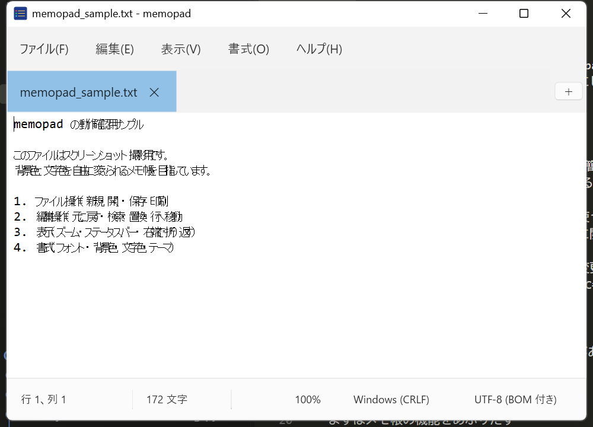
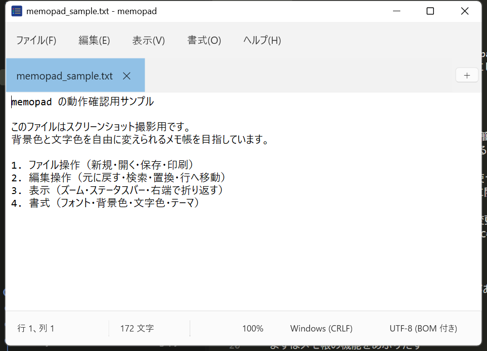
- 本文が透ける。.NET 9 の Fluent テーマはウィンドウ全体を DWM のガラス領域（Mica 背景）にする。GDI で描く RichEdit はアルファ値 0 で描くため、そこが透明扱いになっていた。
DwmExtendFrameIntoClientAreaでフレーム拡張を 0 に戻し、DWMWA_SYSTEMBACKDROP_TYPEを NONE にして、背景色をテーマに合わせて塗った（ThemeService.MakeOpaque）。テーマ切り替え時にも呼び直す。 - 日本語が細い別フォントで出る。Consolas に日本語グリフが無く、GDI のフォント リンクで MS UI Gothic に落ちていた。RichEdit の自動フォント選択（
LanguageOptionの AutoFont＋DualFont）を有効にすると、日本語部分だけ適切なフォントで描かれる。 - ビルドが 1 回おきに失敗する。WPF のマークアップ コンパイル（wpftmp プロジェクト）が
obj内の生成ファイルを見失う。objを消してからビルドすると通るので、確認用の手順はそれに統一した。
2.7 確認
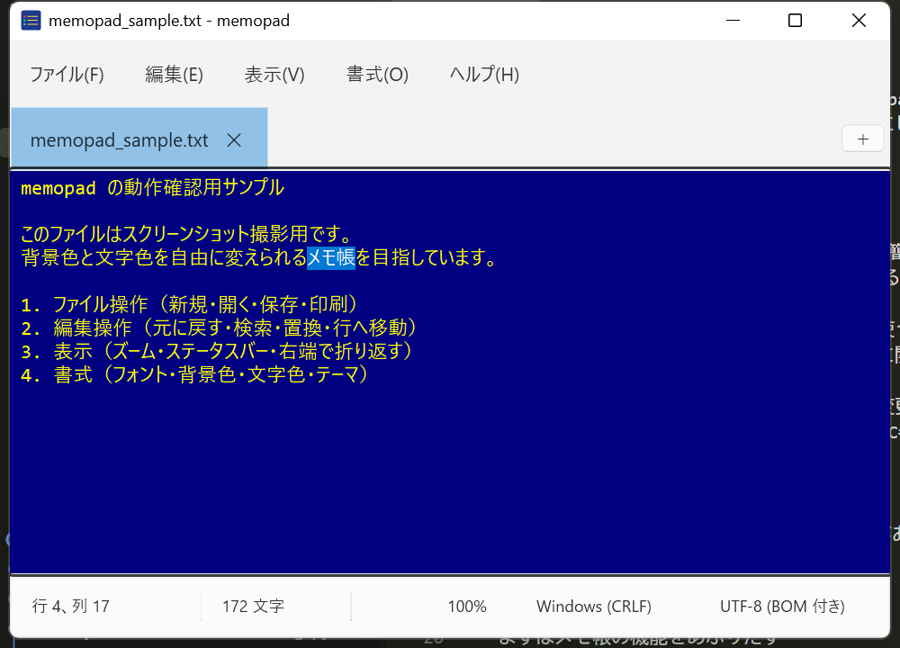
BackColor／ForeColor）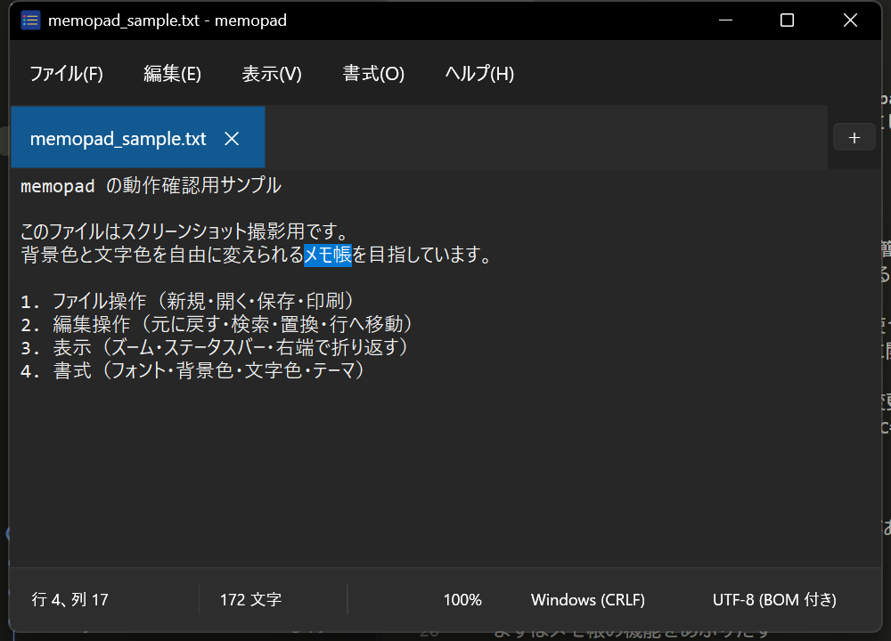
step2 の撮影スクリプト（docs/tools/capture-memopad.ps1）を回帰確認に使い、メニュー・検索／置換・行へ移動・フォント・色・テーマ・タブ・未保存確認・ページ設定・バージョン情報がすべて動くことを確認した。遅延の再計測は表 2-3 の最終行のとおり。
MEMOPAD_PERF=1 を設定して memopad を起動すると %TEMP%\memopad-perf.log にキー押下と本文変更の時刻が記録される。通常起動では何も書かない。
3. FB-2：上部の高さと配置をメモ帳に合わせる（v0.3.0）
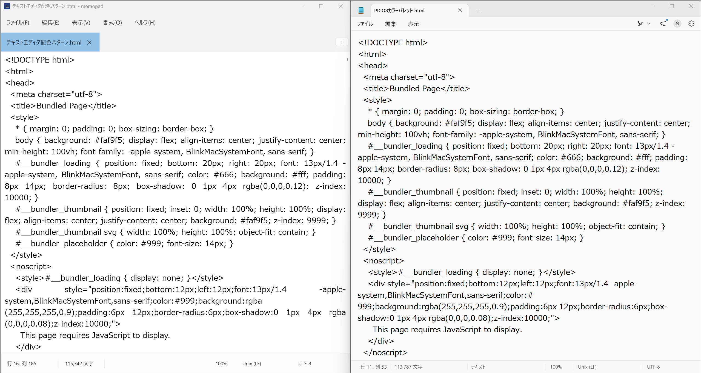
3.1 現象と目標
v0.1.0 は「タイトル バー→メニュー→タブ→本文」の順で、本文が始まるまでがメモ帳より 50 px 以上低い。メモ帳は「タブ（タイトル バーに同居）→メニュー→本文」の順で、＋ボタンは最後のタブのすぐ右にある。フッター（ステータスバー）も memopad のほうが高い。
同じ大きさ（1000×720 物理 px、表示スケール 150 %）で並べて撮り、上端から本文までとステータスバーの高さを画像から測った。
| 項目（論理 px） | メモ帳 | memopad v0.1.0 | memopad v0.3.0 |
|---|---|---|---|
| 上端から本文まで | 75 | 127 | 74 |
| タイトル行（タブを含む） | 41 | 30（標準のタイトル バー）＋ 49（メニュー）＋ 48（タブ） | 42（タブを含む） |
| メニュー行 | 32 | — | 32 |
| ステータスバー | 31 | 47 | 32 |
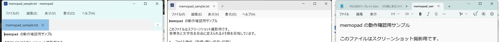
3.2 やったこと
| 項目 | 内容 |
|---|---|
| タイトル バーを自前で描く | WPF の WindowChrome（CaptionHeight=42、UseAeroCaptionButtons=False）で標準のタイトル バーを外し、タイトル行にアイコン・タブ・＋ボタン・最小化／最大化／閉じるボタンを置いた。ボタンのグリフは Segoe Fluent Icons。ダブルクリックで最大化、ドラッグで移動、右クリックでシステム メニューは WindowChrome がそのまま面倒を見る |
| ガラス領域は使わない | GlassFrameThickness=0。ガラス領域があると RichEdit が透ける（2.6 節）。角丸は DWMWA_WINDOW_CORNER_PREFERENCE で DWM に頼む |
| タブの見せ方 | 選択中のタブとメニュー行を同じ色にしてつなげ、タイトル行は少し濃くする（メモ帳と同じ）。Fluent の ListBoxItem は余白が大きいので、タブ用の簡素なテンプレートに差し替えた |
| メニュー行を 32 px に | Fluent の MenuItem は高さ約 58 px あり、Menu の高さを固定すると項目が描画されなくなる。トップ レベルの項目だけ簡素なテンプレート（サブメニューの Popup 込み）にし、サブメニューの項目は Fluent のまま |
| ステータスバーを 32 px に | StatusBarItem の Padding と文字サイズを詰めた |
| 最大化時の余白 | WindowChrome は最大化するとリサイズ枠の分だけ画面外にはみ出すので、最大化中はルートに 7 px の余白を付ける |
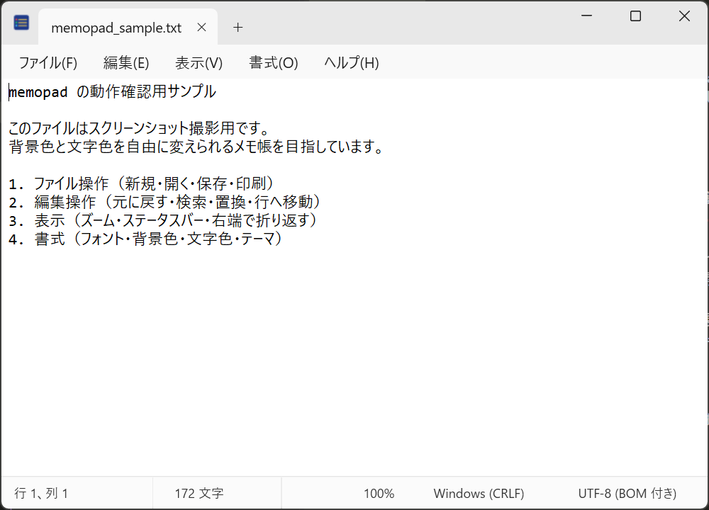
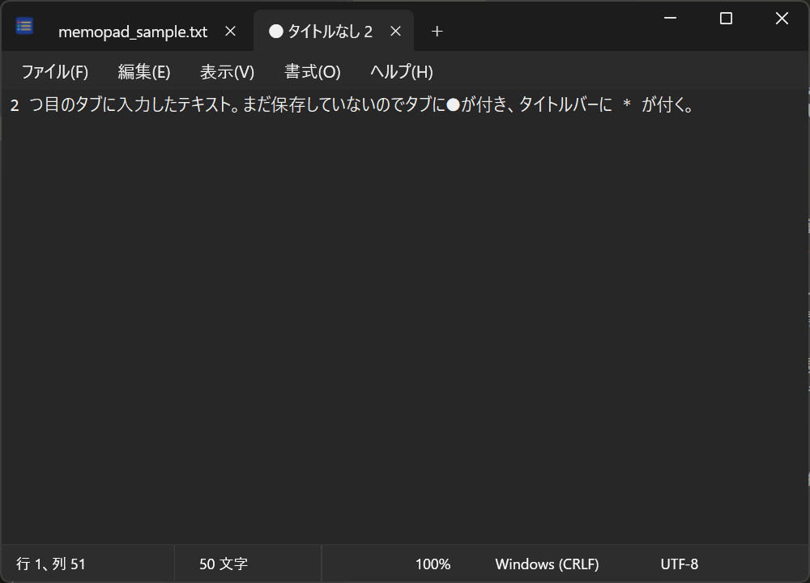
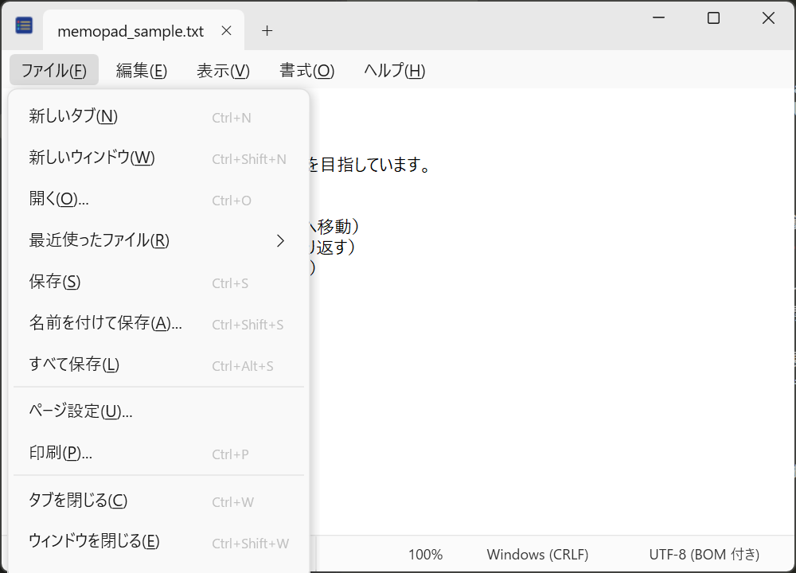
capture-memopad.ps1）は設定を退避してから撮るので、そちらの値を採用した。
4. FB-3：「背景色」「文字色」を「色変更」に統合（v0.4.0）
4.1 現象
v0.1.0 では「書式」メニューに「背景色」「文字色」のサブメニューが別々にあり、どちらも同じ 16 色＋「その他の色」が並んでいた。片方を選ぶたびにメニューを開き直すので使い勝手が悪い、というフィードバック。あわせて 16 色は Windows の基本 16 色から、参照ファイルの PICO-8 パレットに置き替える。
4.2 やったこと
- 「書式」メニューを「フォント」「色変更...」「既定の色に戻す」「テーマ」にした。
- 「色変更」ダイアログ（
Dialogs/ColorChangeDialog.xaml）を新設。左に背景色、右に文字色の 16 色見本（4×4）を置き、それぞれ「その他の色...」から Windows 標準の色の設定ダイアログを開ける。下のプレビューには現在のフォントで見本文を出し、選ぶたびに色が変わる。「既定の色に戻す」もダイアログ内に置いた。OK で反映、キャンセルで元のまま。 - 16 色の定義（
Services/ColorUtil.StandardColors）を PICO-8 の番号順に置き替えた。名前は日本語。 - 撮影スクリプトは、見本ボタンに付けた UI Automation の名前（例「濃い青 #1D2B53」）で色を選ぶように変えた。
| 番号 | 名前 | 色 | 番号 | 名前 | 色 |
|---|---|---|---|---|---|
| 0 | 黒 | #000000 | 8 | 赤 | #FF004D |
| 1 | 濃い青 | #1D2B53 | 9 | オレンジ | #FFA300 |
| 2 | 濃い紫 | #7E2553 | 10 | 黄 | #FFEC27 |
| 3 | 濃い緑 | #008751 | 11 | 緑 | #00E436 |
| 4 | 茶 | #AB5236 | 12 | 青 | #29ADFF |
| 5 | 濃い灰 | #5F574F | 13 | 藍 | #83769C |
| 6 | 明るい灰 | #C2C3C7 | 14 | ピンク | #FF77A8 |
| 7 | 白 | #FFF1E8 | 15 | 桃 | #FFCCAA |
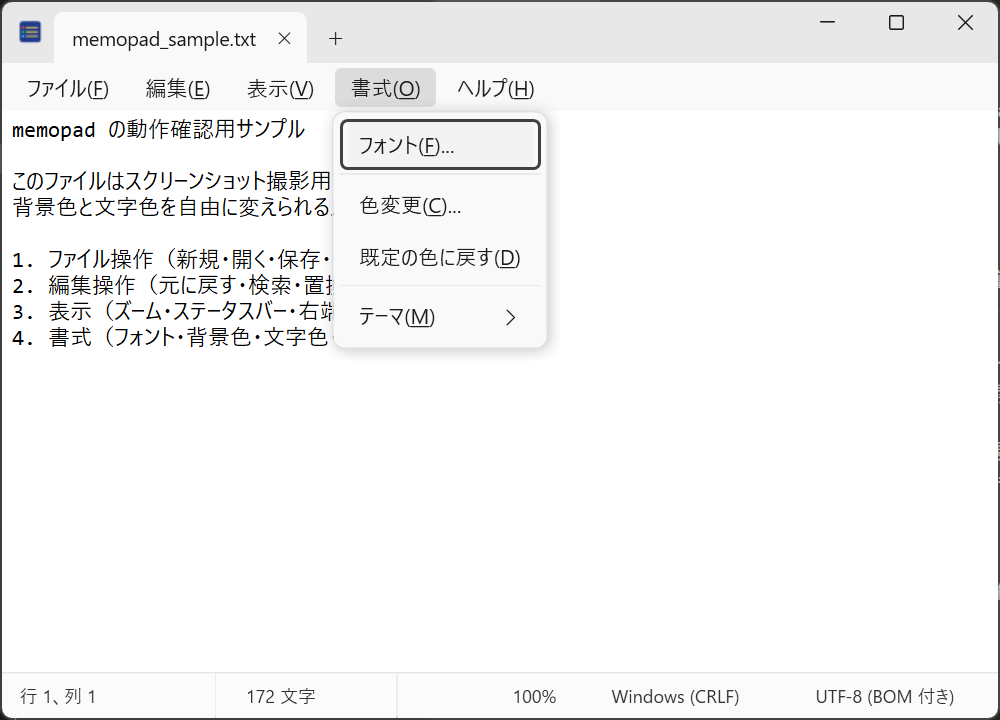
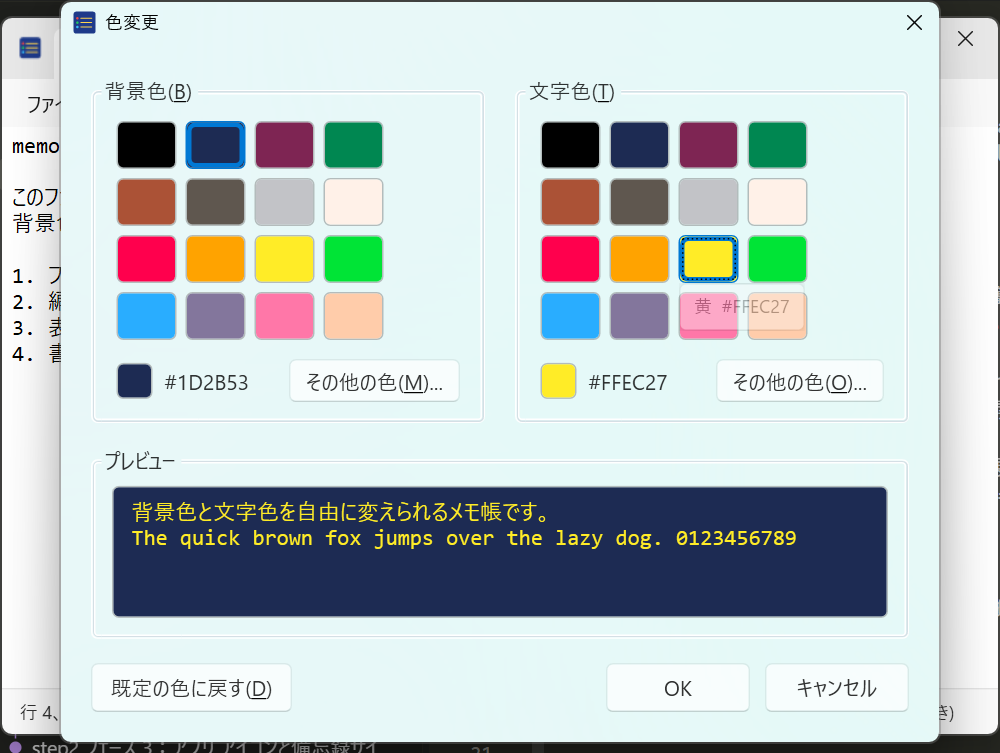
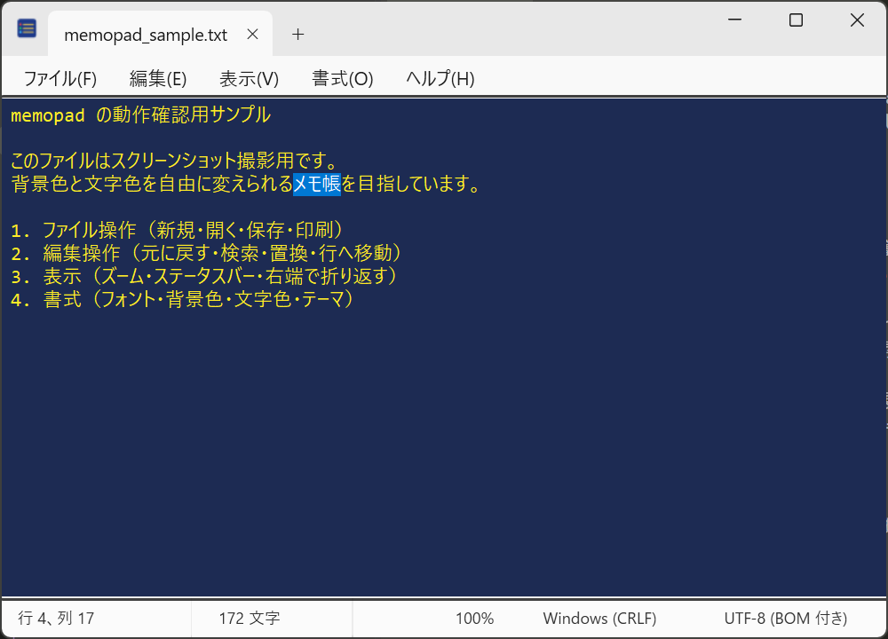
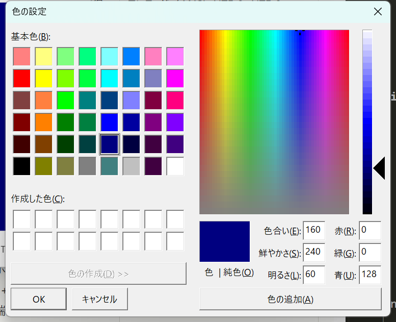
5. FB-4：目に優しい配色 16 パターン（v0.5.0）
5.1 要望
テーマのように全体の配色をまとめて変える機能として、目に優しい配色 16 パターン（参照ファイル「テキストエディタ配色パターン」）を用意し、プレビューを見て選べる方式にしてほしい、というフィードバック。背景色と文字色を一度に変える。
5.2 やったこと
- 「書式」メニューに「配色パターン...」を追加（「色変更...」の下）。
- 「配色パターン」ダイアログ（
Dialogs/ColorSchemeDialog.xaml）を新設。ライト 8 種・ダーク 8 種をカードで並べ、各カードはそのパターンの背景色の上に名前（アクセント色）・見本文（文字色）・色コードを出す。クリックで選ぶと下のプレビューが現在のフォントで切り替わり、OK で本文に反映する。 - 16 パターンの定義は
Services/ColorSchemes.cs。現在の背景色・文字色に一致するパターンがあれば、開いたときにそのカードが選択済みになる。 - 反映後は設定の背景色・文字色に色コードとして保存されるので、「色変更...」で片方だけ変えることもできる。
16 パターン（HTML で再現したもの。名前はアクセント色、色コードは背景 / 文字）：
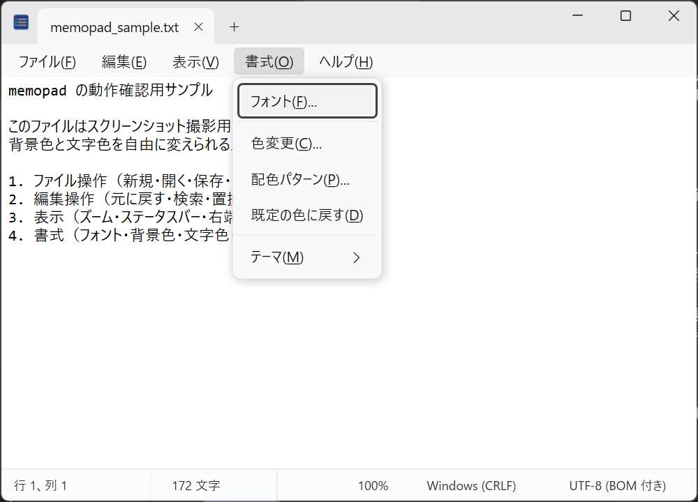
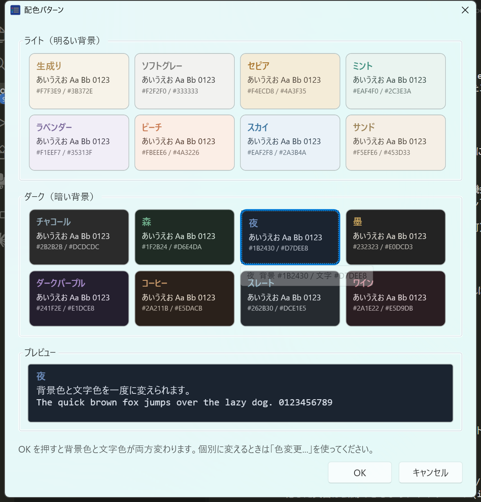
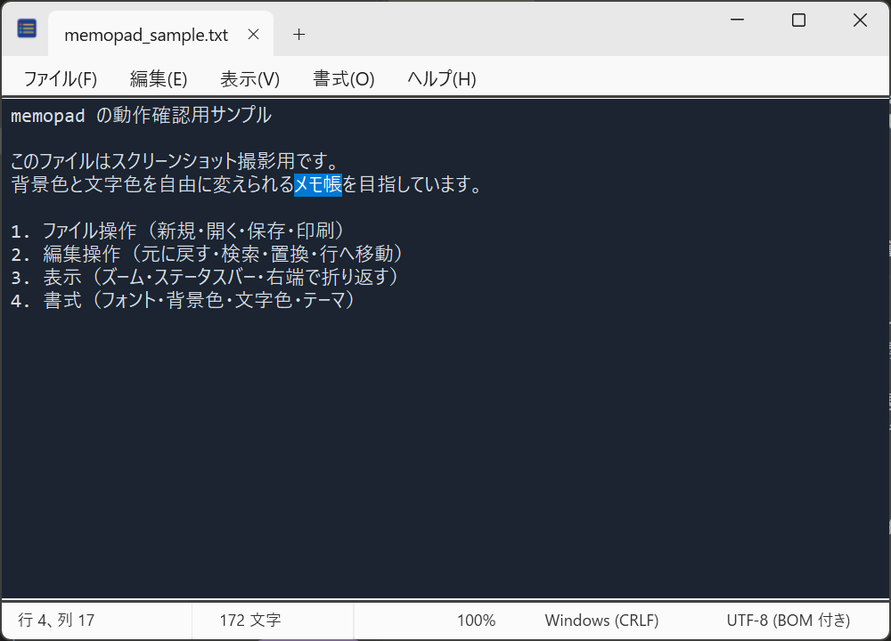
6. FB-5：タブをクリックしても切り替わらない（v0.5.1）
6.1 現象
v0.5.0 をインストールして確認中、タブをクリックしても切り替わらない。メニューと文字入力は動く。Ctrl+Tab やプログラムからの切り替え（新しいタブを開いたとき）は動いていたため、撮影スクリプトの確認では気づけなかった。
6.2 原因
v0.3.0 でタブ用に差し替えた ListBoxItem のスタイルに Focusable=False を付けていた。WPF の ListBoxItem はマウスで押されたとき、まず自分にフォーカスを移し、それが成功したときだけ選択処理を行う。フォーカスを取れない設定にしたことで、クリックしても選択されなくなっていた（フォーカスが本文から離れないように、という意図だったが逆効果）。
6.3 対処と確認
Focusable=Falseを外した。選択後は従来どおり本文へフォーカスを戻す（SelectTab→FocusEditor）。- 再発防止に
docs/tools/test-tabclick.ps1を追加した。memopad を起動して Ctrl+N でタブを 2 つにし、UI Automation で取ったタブの位置を実際にマウスでクリックして、ウィンドウ タイトルの切り替わりとその後のキー入力が本文に届くことを確かめる。起動中の他の memopad には触れず、自分で起動した PID だけを扱う。
| 操作 | v0.5.0（インストール済み） | v0.5.1 |
|---|---|---|
| Ctrl+N でタブ追加 | *タイトルなし 2 に切り替わる | 同じ |
| 1 つ目のタブをクリック | 切り替わらない（*タイトルなし 2 のまま） | タイトルなし に切り替わる |
| 2 つ目のタブをクリック | — | *タイトルなし 2 に切り替わる |
| クリック後にキー入力 | 本文に入る | 本文に入る（abc → abcxyz） |
7. FB-6〜8：表示の細かな崩れ 3 件（v0.5.2）
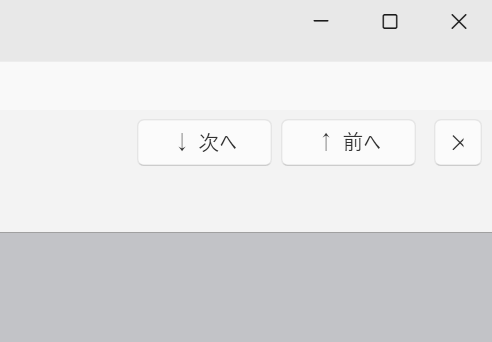
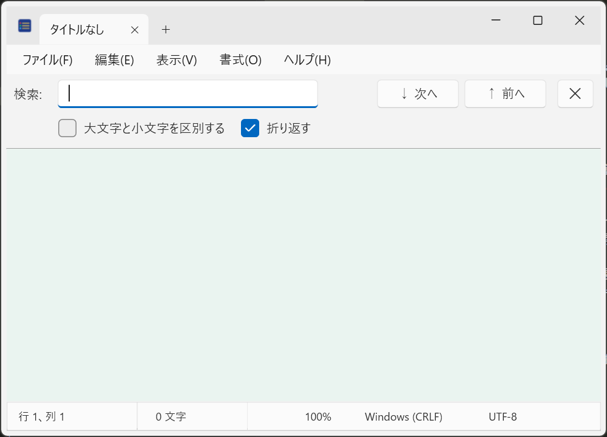
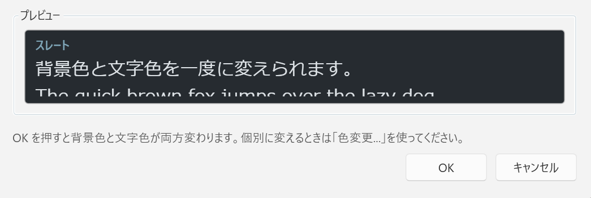
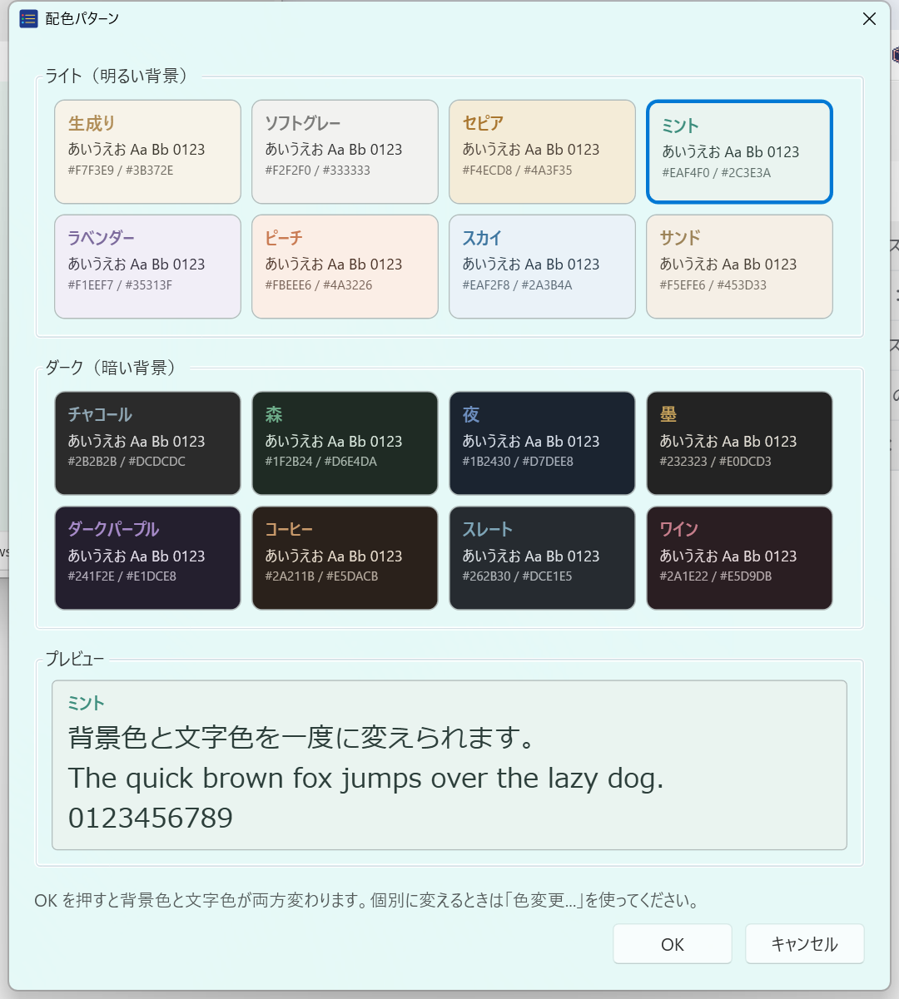
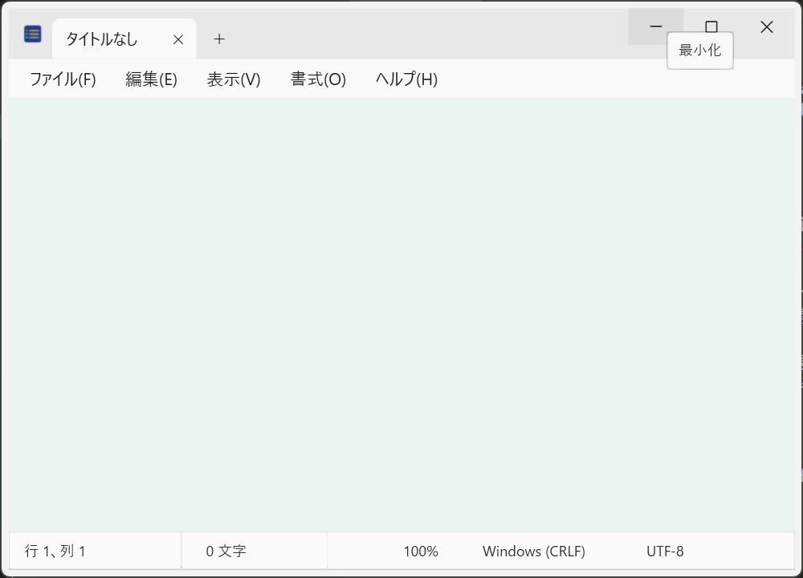
8. FB-11：起動がメモ帳よりワンテンポ遅い（v0.7.0）
8.1 現象と測り方
メモ帳を起動するとすぐウィンドウが出るのに、memopad は一呼吸置いてから出る。FB-1 と同じく、まず数値にした。docs/tools/measure-startup.ps1 は対象を起動し、別プロセスから 1 ms 間隔で (1) 対象プロセスの可視ウィンドウが現れるまで、(2) 画面のピクセル（本文中央とタイトル行）の色が変わらなくなるまで、を測る。8 回起動して 1 回目（コールド）を除いた中央値を採る。
| 対象 | ウィンドウ表示まで | 描画完了まで |
|---|---|---|
| メモ帳（Windows 11 の Store 版） | 約 200 ms | 約 300 ms |
| memopad v0.6.0 | 約 520〜550 ms | 約 650 ms |
ウィンドウが出るまでで 2.5 倍以上、300 ms 以上の差がある。これが「ワンテンポ」の正体。
8.2 起動処理の内訳
環境変数 MEMOPAD_PERF=1 で有効になる診断ログ（Services/PerfLog.cs）に、プロセス起動からの経過時間を段階ごとに記録する Mark を足した。温まった状態（2 回目以降）の v0.6.0 の内訳は次のとおり。
特定の 1 か所が遅いのではなく、WPF の固定費が薄く広く積み上がっている。dotnet-trace で JIT イベントを数えると、起動中に 1,523 メソッドが JIT コンパイルされていた（P/Invoke の呼び出しスタブ約 560、ジェネリック型の実体化約 470、memopad 自身のコード約 150）。同梱の .NET ランタイムは事前コンパイル（ReadyToRun）済みだが、スタブと実体化は実行時に作られる。
8.3 試したことと効果
| 試したこと | 効果（ウィンドウ表示まで） | 採否 |
|---|---|---|
アプリ本体の ReadyToRun 発行（PublishReadyToRun） | 約 10 ms 短縮 | 採用（無害） |
フレームワークまで一体で事前コンパイルする複合 ReadyToRun（PublishReadyToRunComposite） | 温まった状態で約 40 ms 短縮。ただしインストール直後の初回起動が 1.2 秒 → 4.3 秒に悪化（100 MB 超の一体イメージをウイルス対策がスキャンする）、容量 +20 MB | 不採用 |
| Fluent テーマを外す（旧来の Aero2 テーマ） | 約 60 ms 短縮。見た目（ダーク テーマ、Windows 11 風のメニュー）を失う | 不採用 |
| ランタイムのオプション（TieredPGO 無効、並行 GC 無効） | 差なし | — |
WPF の描画をソフトウェアにする（RenderMode.SoftwareOnly） | Direct3D デバイスの生成（約 80 ms）が消え、描画完了が約 50 ms 早まる。memopad の WPF 部分はタイトル行・メニュー・ステータスバーだけで本文は GDI の RichEdit なので、見た目・速度に差は出ない | 採用 |
設定 JSON をソース ジェネレーターで変換（JsonSerializerContext） | 31 ms → 18 ms | 採用 |
Windows Forms／msftedit.dll／System.Drawing／Fluent のアセンブリを別スレッドで先読み（Services/StartupWarmup.cs） | 約 10 ms 短縮（CPU の空いているコアで並列に読み込む） | 採用 |
| フォント（Yu Gothic UI、Segoe Fluent Icons）の別スレッド先読み | 差なし | 不採用 |
| メニュー項目の遅延生成 | メニュー部分の XAML 読み込みは 11 ms しかなく、作り込む価値なし | 不採用 |
8.4 v0.7.0 の結果
| 対象 | ウィンドウ表示まで（中央値） | 描画完了まで（中央値） |
|---|---|---|
| メモ帳 | 205 ms | 約 300 ms |
| memopad v0.6.0 | 521 ms | 669 ms |
| memopad v0.7.0 | 505 ms | 619 ms |
描画完了は 50 ms 早くなったが、ウィンドウが出るまでは 16 ms しか縮まらず、体感はほぼ変わらない。WPF のまま「メモ帳並み」にはできなかった。
8.5 WPF の下限と Windows Forms との比較
どこまで縮められるかを知るため、最小構成のアプリを同じ条件（self-contained 発行、同じ端末）で測った。
- WPF は空に近いウィンドウでも約 400 ms かかる。ランタイム起動 60 ms ＋ WPF Application 初期化 80 ms ＋ XAML／テンプレート／HWND 生成／Direct3D／初回描画で、memopad の機能を削っても 400 ms を下回れない。メモ帳の 200 ms は WPF の構造上届かない。
- Windows Forms なら約 160 ms で、メモ帳より速い。本文の RichEdit はすでに Windows Forms のコントロールなので、メイン ウィンドウ（タイトル行のタブ、メニュー、検索バー、ステータスバー）を Windows Forms で作り直せば、起動はメモ帳並みになる見込み。ダイアログ類は WPF のまま残しても、開くときに初めて WPF を初期化すればよい。
9. Windows Forms への作り直しと MemoPad への改名（v0.8.0）
9.1 方針：本文はそのまま、ガワだけ載せ替える
本文の編集領域はもともと Windows Forms のコントロール（RichEdit を継承した Views/PlainTextEdit.cs）で、v0.2.0 以降それを WPF の WindowsFormsHost に埋めて使っていた。つまり いちばん重要な部分は最初から Windows Forms で、WPF はその周り（タイトル行・メニュー・検索バー・ステータスバー）を描くためだけに 400 ms を払っていたことになる。そこで周りだけを Windows Forms に載せ替えた。
9.2 作ったもの
| ファイル | 役割 |
|---|---|
Program.cs | 入口。App.xaml をやめ、WPF に触れずに設定を読んでフォームを出す |
Views/MainForm.cs | メイン ウィンドウ。WM_NCCALCSIZE で標準のタイトル バーと枠を外し、WM_NCHITTEST でリサイズとドラッグ移動を自分で答える |
Views/TitleBar.cs | タイトル行。タブ（TabButton）と＋・最小化・最大化・閉じるを並べる |
Views/FluentMenuRenderer.cs | MenuStrip を Windows 11 風に描く（角丸のホバー、薄い枠線、チェックと右矢印は Segoe Fluent Icons） |
Views/StatusBarPanel.cs | ステータスバー。改行コードとエンコードはクリックでメニューを出す |
Views/MainForm.Menu.cs / MainForm.Find.cs | メニューと右クリック メニュー／検索・置換バー |
Services/WpfHost.cs | WPF のダイアログを遅延初期化する。起動時は読み込まず、最初にダイアログを開くときだけ WPF を立ち上げる |
Services/ThemeService.cs | Fluent テーマ（ThemeMode）の代わりに、ライト／ダークの配色を ThemePalette として自前で持つ |
消したのは App.xaml、MainWindow.xaml（と分離コード）、EditorView.xaml、Commands.cs、値コンバーター 2 つ。ダイアログ 7 種は WPF のまま、オーナーだけ Window からウィンドウ ハンドルに変えて流用した。
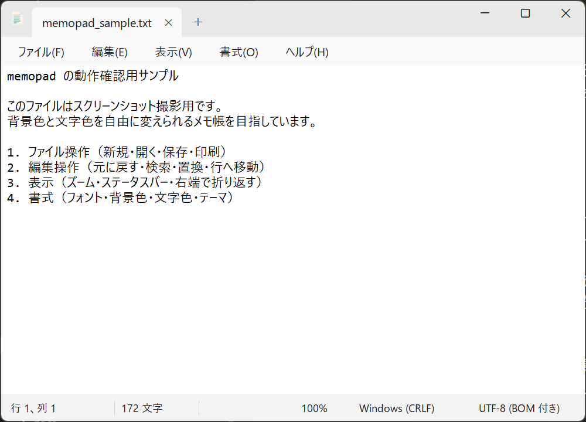
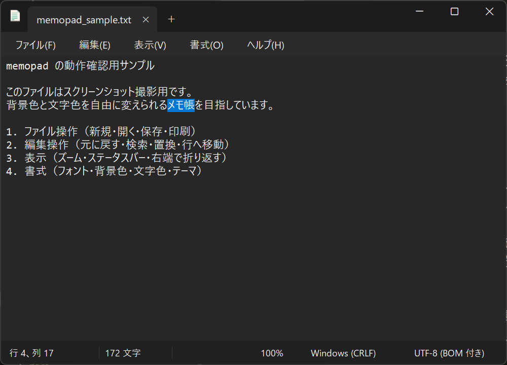
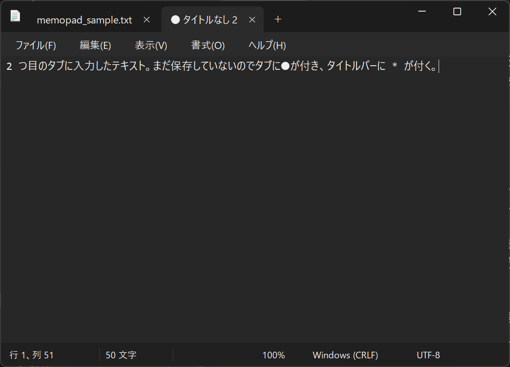
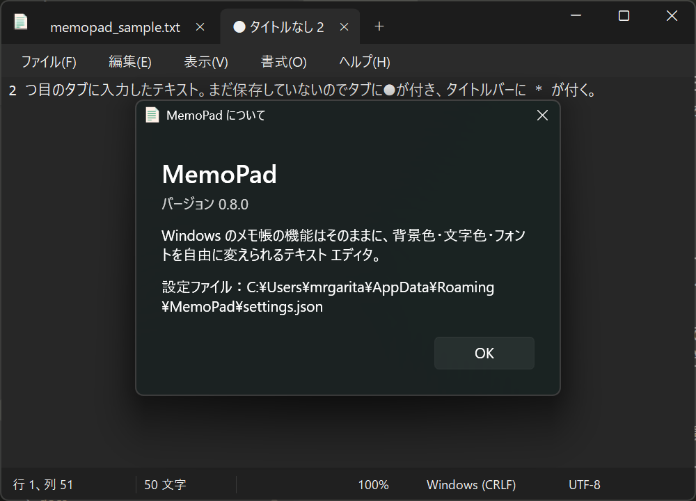
9.3 つまずいた点
| 症状 | 原因と対処 |
|---|---|
| タブが支援技術（スクリーン リーダー）から見えない | 最初はタイトル行を 1 枚のコントロールに自前描画し、AccessibleObject の子として公開したが、UI Automation には名前の無い枠としてしか出なかった（Windows Forms の素の Control は子要素を UI Automation へ渡さない）。タブとボタンを Button を継承した実体のあるコントロールに変え、AccessibleName と AccessibleRole を付けたら、名前・位置・クリックがそのまま伝わるようになった。FB-5 で作ったタブ クリックの確認スクリプトもこれで動く |
| 選択中のタブだけ×が消える | タブの背景を×より後に描いていた。タブをすべて描いてから×を描く順に変えた |
| ステータスバーのメニューを閉じると落ちる | Closed イベントの中で ContextMenuStrip を Dispose していた。後始末が破棄済みのオブジェクトに触れて例外になる。BeginInvoke でメッセージを処理し終えてから捨てるようにした |
| エンコードのメニューが画面からはみ出す | 項目の左端を基準に右へ開いていた。右端を基準に左へ開くようにした |
| 最大化するとウィンドウが画面外へはみ出す | WM_NCCALCSIZE で枠を外すと、最大化時は見えない枠の分だけ外へ出る。GetSystemMetricsForDpi で枠の太さを取り、その分だけ内側に寄せた |
| 撮影スクリプトでメニューの ESC が効かない | Windows Forms のメニューは ESC 1 回ではメニュー モードを抜けない（1 回目でドロップダウン、2 回目で選択解除）。スクリプト側を ESC 2 回に直した。あわせて、撮影前にマウス カーソルを画面の隅へ寄せてツールチップの写り込みを防ぐようにした |
9.4 結果
| 対象 | ウィンドウ表示まで（中央値） | 描画完了まで（中央値） |
|---|---|---|
| メモ帳（Windows 11 の Store 版） | 211 ms | 467 ms |
| MemoPad v0.6.0（WPF） | 521 ms | 669 ms |
| MemoPad v0.7.0（WPF＋短縮策） | 505 ms | 619 ms |
| MemoPad v0.8.0（Windows Forms） | 221 ms | 332 ms |
ウィンドウが出るまでは 505 ms → 221 ms と 2.3 倍速くなり、メモ帳（211 ms）に並んだ。本文が描き終わるまでは 332 ms で、メモ帳（467 ms）より速い。step1 で洗い出した機能はすべて動くことを、撮影スクリプト（docs/tools/capture-memopad.ps1）とタブ クリックの確認スクリプトで確かめている。
9.5 FB-12：MemoPad への改名と新しいアイコン
FB-11 が達成できたので、名称を memopad から MemoPad に改め、アイコンをユーザー提供の新デザイン（クリーム色の文書に緑の罫線）に差し替えた。
| 対象 | 変更 |
|---|---|
| 実行ファイル | memopad.exe → MemoPad.exe（AssemblyName） |
| 画面の表示 | タイトル バー、メニューの「MemoPad について」、各ダイアログの見出しとメッセージ |
| 設定の保存先 | %APPDATA%\MemoPad\settings.json（Windows のパスは大文字小文字を区別しないので、これまでの設定はそのまま引き継がれる） |
| インストーラ | アプリ名・ショートカット・関連付けの表示名、出力ファイル名 MemoPad-setup-0.8.0.exe |
| アイコン | src/memopad/memopad.ico（16〜256 px の 6 サイズ）と、紹介ページ用の PNG・favicon |
リポジトリ名・フォルダー名・名前空間（Memopad）はそのままにした。GitHub の URL が変わると既存のリンクが切れるうえ、識別子は英語のままという方針に沿うため。
10. FB-13：タイトル行でウィンドウを動かせない（v0.9.0）
10.1 現象
v0.8.0 をインストールしたユーザーから「ウィンドウ上部のドラッグでの移動ができなくなっている。ウィンドウ上部をダブルクリックした際のウィンドウ サイズ変更もできない」というフィードバックを受けた。v0.7.0（WPF）までは普通にできていた操作で、Windows Forms への作り直しで持ち込んだ不具合。手元で調べたところ、ウィンドウの四辺をドラッグしてのリサイズも同じ原因で効かなくなっていた（フィードバックには挙がっていなかったが、あわせて直した）。
10.2 原因：当たり判定を子コントロールが横取りしていた
MemoPad は標準のタイトル バーを WM_NCCALCSIZE で外し、「ここはタイトル行（HTCAPTION）」「ここは左の縁（HTLEFT）」といった判定を MainForm が WM_NCHITTEST で答えている。ところが Windows は、その座標にある いちばん手前の子ウィンドウ に当たり判定を尋ねる。v0.7.0 までの WPF はウィンドウ全体が 1 つの HWND だったので親がそのまま答えられたが、Windows Forms はコントロールごとに HWND があるため、タイトル行を覆う TitleBar、四辺を覆う RichEdit やステータスバーが「ここは普通のクライアント領域（HTCLIENT）」と答えてしまい、親の答えは使われない。
どのウィンドウにマウス入力が届くかは WindowFromPoint で調べられる。v0.8.0 では、フォーム自身は正しく答えているのに、入力先はすべて子コントロールだった。
| 位置 | フォームの答え | 入力が届く先（v0.8.0） | 子の答え（v0.9.0） |
|---|---|---|---|
| タイトル行の空き | HTCAPTION（2） | TitleBar | HTTRANSPARENT（-1） |
| 左右の縁 | HTLEFT / HTRIGHT（10 / 11） | RichEdit | HTTRANSPARENT（-1） |
| 下の縁 | HTBOTTOM（15） | ステータスバー | HTTRANSPARENT（-1） |
| タブ・ボタンの上 | HTCLIENT（1） | TabButton | HTCLIENT（1）＝今までどおり |
10.3 直し方：子から HTTRANSPARENT を返す
Views/ChromeHitTest.cs を追加した。子コントロールが WM_NCHITTEST を受け取ったら、その座標を親フォームに聞き返し（MainForm.IsWindowFrameAt）、タイトル行の空きかウィンドウの縁だったら HTTRANSPARENT（自分は透明。下のウィンドウに聞いてほしい、という意味）を返す。すると判定が親へ落ち、ドラッグ移動・ダブルクリックでの最大化／復元・スナップ・右クリックのシステム メニュー・四辺のリサイズを、いつもどおり Windows が処理してくれる。タブや＋ボタンの上は今までどおり子が受け取るので、クリックの動作は変わらない。
| 直したコントロール | 覆っていた場所 |
|---|---|
TitleBar（タブとキャプション ボタンを含む） | タイトル行全体、上端と右上隅 |
PlainTextEdit（RichEdit） | 本文が届く左右の縁 |
StatusBarPanel | 下の縁と左右の下隅 |
ChromeMenuStrip / ChromePanel（メニュー・検索バー・本文の入れ物） | 左右の縁 |
10.4 確かめ方
UI Automation では「マウスで掴んで動かす」操作を再現できないので、mouse_event で実際にドラッグとダブルクリックを行い、ウィンドウの位置とサイズが期待どおり変わるかを確認した（タブのクリック不具合〈FB-5〉を撮影スクリプトで見逃した反省から、v0.5.1 以降は実操作での確認を必ず 1 つ用意している）。
| 操作 | 期待 | v0.9.0 の結果 |
|---|---|---|
| タイトル行の空きをドラッグ | ウィンドウが同じ量だけ動く | (+120, +60) の操作で (+120, +60) 移動 |
| タイトル行をダブルクリック | 最大化する | 最大化した |
| 最大化中にもう一度ダブルクリック | 元のサイズに戻る | 戻った |
| 右の縁を +100 ドラッグ | 幅が 100 増える | 1000 → 1100 |
| 下の縁を +80 ドラッグ | 高さが 80 増える | 700 → 780 |
11. FB-14・FB-15：メニューの見た目（v0.9.0／v0.9.1）
11.1 FB-14：「MemoPad について(A)」の (A)
(A) は About（バージョン情報）の頭文字を割り当てたアクセス キーの表記で、日本語版のメモ帳も「メモ帳について(A)」と出す昔からの決まり。Alt→H→A でダイアログが開く。他の項目（終了(X)、保存(S) など）とも揃っているので、そのままにした。
11.2 FB-15：字下げが広すぎる／文字が上付き
「サブメニューの文字列がやや上付きでバランスが悪い」「メニューからサブメニューが字下げで表示されるが、字下げの幅が文字 2 文字分ほどあり右寄りすぎる」というフィードバック。メモ帳のメニューと並べて、ポップアップの左端から文字までの距離と、項目の中心に対する文字の上下位置を実測した（表示スケール 150 %、単位は実ピクセル）。
| 項目 | メモ帳 | MemoPad v0.8.0 | MemoPad v0.9.0 | MemoPad v0.9.1 |
|---|---|---|---|---|
| 字下げ（チェックの無いメニュー） | 約 21 px | 54 px | 17 px | 25 px |
| 字下げ（チェックの付くメニュー） | 約 58 px | 54 px | 50 px | 62 px |
| 項目の中心と文字の中心のずれ | ほぼ 0 | 5.5 px 上 | 1.5 px 下 | 1.5 px 下 |
| 項目の高さ | 50 px | 48 px | 48 px | 48 px |
原因は 2 つあった。
- 字下げ：Windows Forms のポップアップ メニュー（
ToolStripDropDownMenu）は、チェックやアイコンを置く欄（16 px＋余白）を既定で常に空ける。MemoPad はメニューにアイコンを使わないので、チェックの付く項目が 1 つも無いファイル・編集メニューでも欄だけが残り、字下げが全角 2 文字分になっていた。メモ帳（Windows 11 の新しいメニュー）は、チェックの付く項目があるメニューだけ字下げを深くしている。同じ考え方にして、チェックが付き得る項目のあるメニューだけShowImageMarginを有効にした（表示メニュー、テーマ、ステータスバーの改行コード／エンコード）。 - 上付き：既定のレイアウトでは、文字が項目の高さの中央より上に置かれる。
FluentMenuRenderer.OnRenderItemTextで、文字を描く矩形を項目の高さいっぱいに広げ、上下中央（TextFormatFlags.VerticalCenter）で描くようにした。
v0.9.0 ではアイコン欄を外した分そのままにしたので、今度は文字がポップアップの左端に近づきすぎた（17 px）。
「アイコンが無いメニューも少し字下げするのが基本」というフィードバックを受け、v0.9.1 で表題だけを 5 論理 px
右へ寄せてメモ帳と同じ見え方にした（25 px）。項目の余白（ToolStripMenuItem.Padding）でもポップアップの
余白（ToolStripDropDownMenu.Padding）でも左右の位置は動かせないので、FluentMenuRenderer で
文字を描く矩形をずらしている。ショートカットの表示（右寄せ）と、メニュー バーの項目はずらさない。
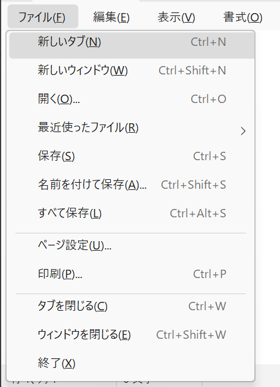
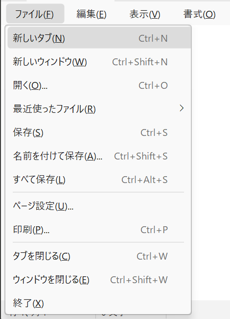
12. FB-16：ドラッグ＆ドロップで開くと編集済みになる（v0.9.1）
12.1 現象
エクスプローラーから既存のテキスト ファイルを本文の上にドラッグ＆ドロップして開くと、開いた直後なのに
タイトルに *、タブに●が付いて「編集済み」の状態になる。本文の内容と文字数は正しく、そのまま閉じようとすると
保存の確認ダイアログが出てしまう。メニューの「開く」やエクスプローラーからの「プログラムから開く」では起きない。
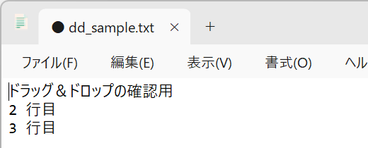
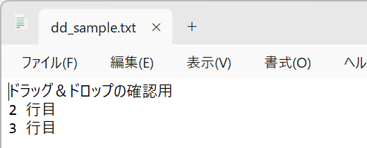
12.2 原因：ドロップを RichEdit にも処理させていた
本文の RichEdit は OLE のドロップ先を自分で登録していて、Windows Forms はそこに相乗りする形で
DragDrop イベントを出す。MemoPad はそのイベントでファイルを開いていたが、イベントを出したあとに
RichEdit 自身のドロップ処理が続く。プレーン テキスト モードでは実際には何も貼り付けられないものの、
変更通知（EN_CHANGE）だけが上がるため、直前に読み込んだばかりの文書が「編集済み」と判定されていた。
ドロップ先のタブが空の「タイトルなし」だと、そのタブを使い回してファイルを読み込む（メモ帳と同じ挙動）ので、 読み込んだ文書そのものに●が付く。本文に何か書いてある状態で落としたときは別のタブが作られるため、 新しいタブは●にならず、現象が見えにくかった。
12.3 直し方：ドロップ先を自前のものに差し替える
Views/FileDropTarget.cs に IDropTarget の実装を追加し、RichEdit のハンドルができたところで
RevokeDragDrop→RegisterDragDrop と差し替える。受け付けるのはファイル（CF_HDROP）だけで、
ドロップされたデータは RichEdit に渡さない。これで「ファイルを開くだけ」の動作になる。
ファイルを開く処理自体は BeginInvoke で後回しにして、ドロップの処理中にドラッグ元を待たせないようにした。
| 落とす場所 | 受け取るもの | v0.9.1 の動き |
|---|---|---|
| 本文（RichEdit） | FileDropTarget（自前） | 開くだけ。編集済みにならない |
| タイトル行・メニュー・ステータスバー | フォームの DragDrop（従来どおり） | 開くだけ |
| ファイル以外（文字列など） | — | 受け付けない（従来どおり） |
12.4 確かめ方
エクスプローラーを開いてファイルの項目の位置を UI Automation で取り、mouse_event で実際にドラッグして
MemoPad に落とすスクリプトで確認した。自前のウィンドウから DoDragDrop で送る合成のドロップでは、
RichEdit に拒否されて再現しなかった（エクスプローラーが渡すデータには複数の形式が入っているため挙動が違う）。
再現には本物のドラッグが要る、という点も含めての確認になった。
| 手順 | v0.9.0 | v0.9.1 |
|---|---|---|
| 空のタブに本文へドロップ | *dd_sample.txt（編集済み） | dd_sample.txt |
| 入力済みのタブがある状態で本文へドロップ | 新しいタブで開く（編集済みにはならない） | 同じ |
| タイトル行へドロップ | dd_sample.txt | 同じ |
13. FB-17：ホイールで最後の行まで届かない（v0.9.2）
13.1 現象
「長いファイルをマウス ホイールでスクロールしたとき、最後の改行までスクロールされなかった。メモ帳では問題なく最後の改行まで届く。些細なことだが気になる」というフィードバック（再現用のファイルも受け取った）。 ファイルの末尾が改行で終わっていると、その改行のあとに空の行が 1 行あり、カーソルもそこへ置ける。メモ帳はホイールでこの空行が見える位置まで送れるが、 MemoPad は最後の文字の行が画面の下端に来たところで止まり、それ以上回しても動かなかった。
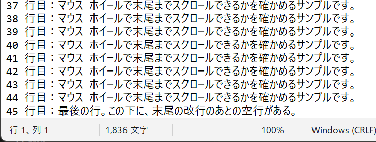
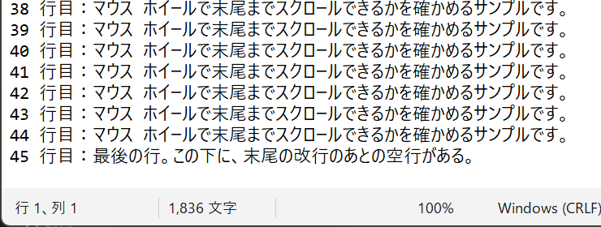
13.2 原因：RichEdit のホイール処理は末尾の空行を数えない
ホイールで一番下まで送ったときの位置を、スクロールバーの ▼（1 行ずつ送る）や「一番下へ」（SB_BOTTOM）と比べた。
値はスクロール位置（px。表示スケール 150 %、1 行 26 px）。ファイルの末尾の形を 3 通りに変えると、ホイールだけが、最後の改行のあとの空行 1 行分手前で止まることが分かった。
| ファイルの末尾 | ホイール（40 ノッチ） | ▼ で 1 行ずつ | 一番下へ（SB_BOTTOM） |
|---|---|---|---|
| 改行 1 つ（受け取ったファイル） | 901（26 px 手前） | 927 | 927 |
| 改行なし | 901 | 901 | 901 |
| 改行 2 つ | 927（26 px 手前） | 953 | 953 |
MemoPad の本文は Windows 標準の RichEdit（msftedit.dll、この端末では 10.0.26100）で、ホイールの処理も RichEdit 自身が行っていた
（1 ノッチで 3 行を約 0.3 秒かけて動かす、なめらかスクロール）。メモ帳の本文も RichEdit 系の部品だが、読み込んでいるモジュールを調べると、
アプリに同梱した新しい RichEdit（riched20.dll 16.0、Office 系）だった。こちらではこの癖が直っている。
Office の DLL は再配布できないので、MemoPad の側で対処する。
13.3 直し方：ホイールだけ MemoPad が自前でなめらかに送る
Views/SmoothWheelScroller.cs を追加し、PlainTextEdit が WM_MOUSEWHEEL（Ctrl・Shift を押していないもの）を
RichEdit に渡さず、このクラスに回すようにした。Ctrl＋ホイールのズームと Shift＋ホイールは今までどおり。
- 送る量：1 ノッチで「マウスの設定の行数」（既定 3 行）×画面の一番上の行の高さ。行の高さは RichEdit から実測するので、ズームの倍率もそのまま反映される。マウスの設定が「1 画面ずつ」なら 1 画面分。タッチパッドの細かい回転（120 未満）はその割合だけ送り、端数も次へ持ち越す。
- 止める位置：スクロール位置（
EM_SETSCROLLPOS）を直接動かし、上限はスクロールバーで一番下へ送ったときと同じnMax − nPageに抑える。EM_SETSCROLLPOSは末尾を越えた位置も受け付けてしまうので、上限は自分で決める。12 万行・数百万 px の文書でも位置を 32 bit のまま正しく扱えることを、検証用の小さなアプリで先に確かめた。 - 動き方：残りの距離に比例して進め（動き始めが速く、止まり際がゆるやか）、止まり際だけ最低の速さを設けて、1 ノッチを約 0.25 秒で動かし終える。途中でキー操作やスクロールバーなど、ほかの操作でスクロールされたら、そちらを優先してその場で止める。
- 起動への影響：タイマーなどの部品は、最初にホイールを回したときに初めて作る。起動時の処理には何も足していない。
| 項目 | v0.9.1（RichEdit 自身） | v0.9.2（SmoothWheelScroller） |
|---|---|---|
| 1 ノッチの量 | 3 行（78 px） | 3 行（78 px） |
| 動き始め | 約 50 ms 後 | 約 15〜30 ms 後 |
| 動き終わり | 約 0.32 秒（等速、約 30 コマ／秒） | 約 0.25 秒（止まり際ゆるやか、約 60 コマ／秒） |
| 末尾が改行のファイル | 空行の 1 行手前で止まる | 空行まで届く |
| 上へ送り切ったとき | 先頭から 1〜2 px ずれて止まることがある | 先頭（0）で止まる |
| 送っている途中で Ctrl+Home | 先頭へ戻ったあとも残りの動きが続き、113 px の位置で止まる | 先頭で止まる |
| タッチパッド相当（delta −1 を 120 回） | — | 78 px（1 ノッチと同じ） |
13.4 確かめ方
実際のマウス入力（mouse_event）でホイールを回し、別プロセスから GetScrollInfo でスクロール位置を読んで確かめた。
表の値は「ホイールで送り切った位置 ／ スクロールバーの一番下の位置」。
| 確認 | v0.9.1 | v0.9.2 |
|---|---|---|
| 受け取ったファイル（末尾に改行 1 つ） | 901 ／ 927 | 927 ／ 927 |
| 末尾に改行なし／改行 2 つ | 901 ／ 901、927 ／ 953 | 901 ／ 901、953 ／ 953 |
| 折り返しなし・長い行のファイル（横スクロールバーは v0.9.2 だけ出る、14 節） | 1,525 ／ 1,551 | 1,577 ／ 1,577 |
| 12 万行：一番下から上へ 3、下へ 10 ノッチ | — | 3,119,471 ／ 3,119,471 |
| 12 万行：先頭から 40 ノッチ | — | 3,120 px（40 × 78 px どおり） |
| ズームを 1 段拡大してから 1 ノッチ | 84 px | 84 px |
| Ctrl＋ホイール（ズーム）、Shift＋ホイール | 修正前後で同じ動き | |
「今回の修正で起動時間が増えないか」という確認の依頼があったので、修正前（v0.9.1）と修正後を配布版と同じ条件（self-contained・ReadyToRun）で発行し、 交互に計測した。どちらも差は計測のばらつきの範囲で、増えていない。大きなファイルの読み込みも変わらない。
| 計測 | v0.9.1 | v0.9.2 |
|---|---|---|
| 起動：ウィンドウ表示（10 回の中央値、2 巡） | 226.5 ms、223.5 ms | 223 ms、219.5 ms |
| 起動：描画完了（同上） | 348 ms、333.5 ms | 335.5 ms、336 ms |
| 英数字 11.8 MB・12 万行を開き、UI が応答できるまで（5 回の中央値） | 2,011 ms | 2,017 ms |
14. FB-18：折り返しなしで横にスクロールできない（v0.9.2）
14.1 現象
FB-17 を確かめる途中で見つけた。「右端で折り返す」をオフにすると、長い行は右端で切れたまま横スクロールバーが出ない。 End でカーソルを行末（306 列目）へ動かしても表示が横に動かず、右端から先の文字を見る手段がなかった。 メモ帳は折り返しなしのとき横スクロールバーを出し、カーソルに合わせて横にも送る。本文を RichEdit に置き換えた v0.2.0 からの不具合で、 了承をもらって FB-18 として v0.9.2 で直した。
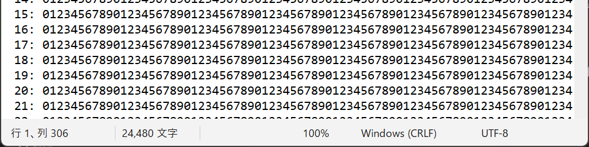
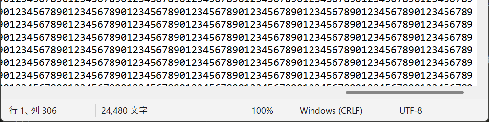
14.2 原因：Windows Forms の WordWrap が true のままだった
Windows Forms の RichTextBox は、自分の WordWrap プロパティが true（既定）だと、ウィンドウを作るときに
横スクロールバー（WS_HSCROLL）と、カーソルに合わせて横に送る指定（ES_AUTOHSCROLL）を付けない。
MemoPad は折り返しを切り替えても元に戻す履歴が消えないよう、WordWrap を使わず RichEdit に直接 EM_SETTARGETDEVICE を送って切り替えている
（WordWrap を変えるとウィンドウが作り直され、履歴が消える）。そのため WordWrap は既定の true のまま残り、
折り返しを外しても横に送る手段がなかった。本文のウィンドウのスタイルを調べると、実際に 2 つとも付いていなかった。
14.3 直し方
PlainTextEditのコンストラクター（ウィンドウを作る前）でWordWrap = falseにして、2 つのスタイルが付くようにした。折り返しの切り替えはこれまでどおりEM_SETTARGETDEVICEで行うので、元に戻す履歴は残る。- ところが RichEdit は、「折り返しなし→あり」に切り替えても横スクロールバーを自分では片付けず、表示の高さの計算がスクロールバー 1 本分（26 px）ずれたままになった。折り返しを切り替えるときに
EM_SHOWSCROLLBARで横スクロールバーを明示的に隠す（折り返さないときは使える状態に戻す）ようにした。折り返さないときも、長い行が無ければ RichEdit が自動で隠す。
14.4 確かめ方
横スクロールバーの有無は、本文の欄の高さ（出ていれば 1 本分低くなる）と縦のスクロール範囲で確かめた（150 %、単位は px）。 長い行は 300 文字 × 80 行、短い行は 1 行 15 文字前後 × 60 行の検証用ファイル。
| 状態 | 横スクロールバー | 本文の欄の高さ | 縦の一番下 |
|---|---|---|---|
| 長い行・折り返しありで起動 | なし | 561 | 9,871 |
| → 表示メニューで折り返しなしへ | あり | 535 | 1,577 |
| → 折り返しありへ戻す | なし | 561 | 9,871（EM_SHOWSCROLLBAR を入れる前は 9,897 にずれていた） |
| 長い行・折り返しなしで起動 | あり | 535 | 1,577 |
| 短い行だけ・折り返しなし／あり | なし | 561 | 1,031 |
- End で 1 行目の末尾へ動かすと、横の位置が 0 → 2,705 に変わり、カーソルが見える位置まで送られる（v0.9.1 は 0 のまま）。
- その状態でホイールを回しても、横の位置（2,705）は保たれる。
- 文字を入力してから折り返しを 2 回切り替え、Ctrl+Z で入力を取り消せる（ウィンドウが作り直されず、元に戻す履歴が残っている）。
- 縦・横のスクロールバーが両方出たときの右下の角は、ライト テーマで薄い灰色、ダーク テーマで少し明るい濃い灰色になり、浮いて見えない。
15. FB-19：大きなファイルで固まる（v0.10.0 で本文を Scintilla に変更）
15.1 現象
v0.9.2 を実際に使ってもらったところ、次の報告を受けた（2026-09-12）。
- 「右端で折り返す」オンでもオフでも、10.4 MB・12 万行の日本語ファイル（
big-ja-120k.txt）を開くと長時間固まる（一応は開く）。 13.4 で「折り返しなしなら約 3 秒」と報告した数字は、実機での体感と違っていた。 - 一度固まったあとは、操作の種別に関わらずそのつど固まるようになる。＋ボタンで新規タブ、ウィンドウの移動、最大化、いずれでも起きる。
2 つ目の「一度固まるとその後も固まる」は、最初の読み込みだけの問題ではないことを示している。 レイアウトの計算結果が持ち越されず、画面を作り直すたびに大きな文書の計算をやり直している可能性が高い。
15.2 対処：先に配布を止める
ユーザーの判断は「固まるという現象を抱えた v0.9.2（以前のバージョンも含め）は、エディタとしての機能を満たしていない」というもの。 これを受けて、原因調査より先に配布の停止を行った。
| 対象 | 対処 |
|---|---|
GitHub Releases のインストーラ（v0.6.0〜v0.9.1 の MemoPad-setup-*.exe） | すべて削除。リリース ページ自体と自動生成のソース zip は残し、本文に停止の理由を明記 |
| 紹介ページ・README | ダウンロードのボタンと手順をお知らせに差し替え |
| 備忘録サイト（このページを含む） | 公開を継続。経過はこの節に追記していく |
| ソース コード | 公開を継続 |
修正が済んで同じファイルが実用的な時間で開けることを確かめたら、あらためて配布を再開する。 → 2026-09-13 に v0.10.0 で配布を再開した（15.9）。
15.3 測り直し：報告した数字が違っていた
まず実機と同じ手順（アプリにファイルのパスを渡して起動する）で測り直した。docs/tools/measure-openfile.ps1 を作り、
ウィンドウが出てから WM_NULL に答えられるようになるまでを外から測る。
| 操作 | MemoPad v0.9.2 折り返しオン | 同 折り返しオフ | メモ帳 |
|---|---|---|---|
| 開く（応答が戻るまで） | 43.5 秒 | 87.3 秒 | 0.41 秒 |
| 最大化 | 28.6 秒 | 55.7 秒 | 0 秒 |
| 元のサイズへ | 28.6 秒 | 55.7 秒 | 0 秒 |
13.4 で「折り返しなしなら約 3 秒」と書いたのは誤りで、折り返しなしのほうが倍遅い。
前回はアプリの外から測る手順ではなく、別の条件で測った数字をそのまま載せてしまっていた。
また、1 回のリサイズで 28.6 秒＝全文のレイアウト 2 回分かかっている。余白を付ける EM_SETRECT を
OnResize のたびに呼んでおり、WM_SIZE による再計算に加えてもう 1 回走っていた。
15.4 原因：日本語と英字が混ざった行の「文字幅の問い合わせ」
本文のスレッドの命令ポインタを 2 ms ごとに拾い、どのモジュールで時間を使っているかを集計した
（SuspendThread→GetThreadContext→ResumeThread。win32u.dll のエクスポート表を解析して関数名まで対応付けた）。
30,000 行の読み込み中に 432 サンプル。
| 関数 | 割合 | 内容 |
|---|---|---|
NtGdiGetWidthTable | 55.3 % | GDI の文字幅テーブルの取得 |
NtGdiGetCharWidthW | 28.0 % | 1 文字ずつの幅の取得 |
NtGdiGetCharSet | 6.0 % | 文字セットの問い合わせ |
| MsftEdit.dll 自身 | 7.2 % | RichEdit 本体の処理 |
つまり 時間のほとんどは RichEdit ではなく、GDI へ文字幅を尋ねるシステム コールだった。 どういうときに遅いのかを、行の中身を変えながら 30,000 行で測って絞り込んだ。
| 1 行の中身（30,000 行） | 読み込み |
|---|---|
| 英数字だけ | 147 ms |
| 日本語だけ | 228 ms |
| 日本語＋英字の混在 | 7,224 ms |
日本語と英字が同じ行に混ざると、GDI の文字幅キャッシュが効かなくなって 30〜50 倍遅くなる。 行数に比例して増える（7,500 行 1.8 秒 → 120,000 行 29 秒）。今回のファイルは「空白＋行番号＋日本語＋英字」で、 日本語の実文書ではごくありふれた形なので、まともに直撃していた。
RichEdit 側の設定で回避できないか、次をすべて試したが効果はなかった。
- 自動フォント選択を切る（
EM_SETLANGOPTIONS= 0。適用されていることを読み戻して確認） - フォントの文字セット指定 4 種（DEFAULT／SHIFT_JIS／ANSI／OEM）
EM_SETEDITSTYLEのSES_EMULATESYSEDIT・SES_DRAFTMODE・SES_NOEALINEHEIGHTADJUSTほか 8 種EM_SETTYPOGRAPHYOPTIONS（TO_SIMPLELINEBREAKほか）- プレーン／リッチ テキスト モード、単一／複数コードページ、
EM_STREAMINとTextの比較 - フォント 7 種・サイズ 3 種・ウィンドウ幅 6 種
- 旧版の RichEdit（
riched20.dllのRichEdit20W）→ 26.8 秒で同じ
15.5 メモ帳が速い理由と、Windows App SDK を抱える案
メモ帳の本文は RichEditD2DPT というウィンドウ クラスだった。これは Windows App SDK の
WinUIEdit.dll（DirectWrite 描画の新しい RichEdit）が提供するもので、msftedit.dll には無い。
「Windows App SDK を同梱すれば使えるのでは」と考えて実際に試した。
| 試したこと | 結果 |
|---|---|
WinUIEdit.dll を LoadLibrary | 読み込めるが RichEditD2DPT は登録されない |
DllGetVersion を呼ぶ／エクスポート 24 個を確認 | クラスを登録する関数は無い |
CreateWindowEx("RichEditD2DPT", …) | 失敗（err=1407 クラスが存在しない） |
| Windows App SDK 1.8 を参照し、XAML Islands で WinUI を初期化 | 初期化後も登録されない。WinUI の TextBox／RichEditBox を置いても、その名前の子ウィンドウはできない |
メモ帳の速さは NotepadTextBox というメモ帳独自の実装によるもので、公開された部品ではなかった。
しかも、同じ 10.4 MB のファイルを WinUI のコントロールに入れると次のとおりで、そもそも速くならない。
| 方式 | 10.4 MB・12 万行 |
|---|---|
| WinUI 3 TextBox | 28.4 秒（時間の 92 % は WinUIEdit.dll の中） |
| WinUI 3 RichEditBox | 52.4 秒 |
| 現行 RichEdit（比較） | 29.0 秒 |
配布物も 153.6 MB → 251.8 MB（ファイル数 265 → 585）に増え、WinUI の初期化で起動も約 190 ms 延びる。 FB-11 で 505 ms → 221 ms にした成果を失ううえ、肝心の問題が直らないので、この案は捨てた。
15.6 見方を変える：問題は「合計時間」ではなく「止まっている時間」
メモ帳をよく観察すると、縦スクロールの範囲が「行数 × 1 行の高さ」ちょうど（120,001 × 42 = 5,040,042）で、 開いた直後から最後まで変わらなかった。つまりメモ帳は全行を測らずに見積もり、画面に出た行だけ測っている。 だから折り返しがオンでも一瞬で開ける。
そこで計測の指標を「合計時間」から「操作を受け付けない時間の最長」に変え、
docs/tools/measure-freeze.ps1 で測り直した。この指標で候補を比べると次のようになる。
| 本文のコントロール | 読み込み中の最長の無応答 | 最大化 | 元のサイズ |
|---|---|---|---|
| メモ帳（参考） | 0 ms | 0 ms | 0 ms |
| Scintilla | 0〜22 ms | 0 ms | 0 ms |
| Win32 の Edit コントロール | 3,800〜28,000 ms | 同左 | 同左 |
| RichEdit（v0.9.2） | 43,456 ms | 19,944 ms | 20,006 ms |
Win32 の Edit コントロールも候補だった（折り返しオフなら 0.2 秒で開ける）が、折り返しオンだと フォント次第で 3.8〜28 秒の無応答が残り、多段階の「元に戻す」も自前で作る必要があった。 Scintilla は折り返しの計算自体には時間がかかる（Consolas で 11〜33 秒）ものの、それを空き時間に分けて進めるので 一度も画面が止まらない。
15.7 v0.10.0：本文を Scintilla に差し替えた
採用前に、これまでのフィードバックで作り込んだ 2 つを実測して確かめた。
| 確認 | RichEdit（現行） | Edit | Scintilla |
|---|---|---|---|
| 起動：ウィンドウ表示（同一条件・中央値） | 148.5 ms | 119.5 ms | 167 ms |
| 入力→表示（FB-1。20 回の中央値） | 16.9 ms | 16.8 ms | 16.7 ms |
入力レスポンスは 3 つとも計測の下限（画面の 1 フレーム＝16.7 ms）に張り付いており、差は無い。 起動は配布版で 229 ms → 256 ms（同じ端末のメモ帳は 202 ms）で、約 30 ms の増加に収まった。
実装で押さえた点は次のとおり。
- 改行はエディタ内部で LF に統一（
EolMode = Eol.Lf）。読み込み時に変換し、保存時にTextFileServiceがファイルの改行コードへ戻す。RichEdit のときと同じ約束なので周りのコードは変えていない。 - 「編集済み」は Scintilla の保存ポイントで判定する（
SetSavePointとSavePointLeft／SavePointReached）。本文が変わったかどうかで判定すると、 コントロールの初期化でも「変更あり」とみなされ、新規タブが最初から編集済みになってしまう。 - ホイールで最終行まで届くこと（FB-17）と、折り返しオフの横スクロール（FB-18）は
Scintilla の標準機能で満たせたので、v0.9.2 で自作した
SmoothWheelScroller.csは削除した。 - ズームはフォント サイズを倍率で計算する（Scintilla の
Zoomは整数ポイントの増減なので % 表示と合わない）。 - ファイルのドロップは、これまでと同じく
FileDropTargetをRegisterDragDropで登録して自前で受ける （FB-16 と同じ理由）。 - 「行へ移動」の行数は全文を走査せずエディタから受け取るようにした（大きなファイルでも一瞬で済む）。
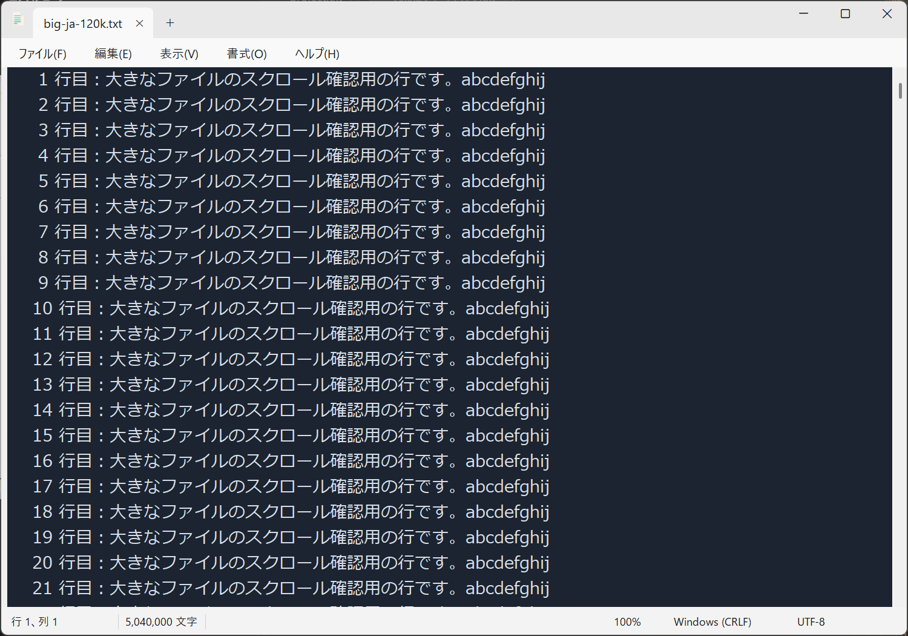
15.8 確かめ方
| 確認 | v0.9.2 | v0.10.0 |
|---|---|---|
| 10.4 MB・12 万行を開く：最長の無応答 | 43,456 ms | 34 ms |
| 同：最大化／元のサイズ | 19,944 / 20,006 ms | 0 / 0 ms |
| 起動：ウィンドウ表示（配布版・10 回の中央値） | 229 ms | 256 ms |
ホイールで最後の空行まで（docs/tools/test-scroll.ps1） | OK | OK |
| 折り返しオフの横スクロール（同上） | OK | OK |
多段階の元に戻す／やり直し（docs/tools/test-editing.ps1） | OK | OK |
| 保存の往復（CRLF／LF の維持、日本語） | OK | OK（10 項目すべて） |
タブのクリック切り替え（docs/tools/test-tabclick.ps1） | OK | OK |
| インストーラの大きさ | 51.2 MB | 54.3 MB（+3.1 MB） |
ControlType.Pane・パターンなし）。
RichEdit は ControlType.Document ＋ TextPattern／ValuePattern で読めていたので、
スクリーン リーダーなどの支援技術に対しては後退している。Scintilla の SCI_SETACCESSIBILITY は
GTK 版だけの機能で Windows では効かない。独自のアクセシブル オブジェクトを返す・WM_GETOBJECT を
自前で処理する・UI Automation の問い合わせに答えず MSAA へ橋渡しさせる、の 3 つを試したが出せなかった。
UI Automation プロバイダー（IRawElementProviderSimple／ITextProvider）の自前実装が要るため、
別の課題として扱う。
15.9 v0.10.0 の確認と、開いた直後だけ操作がカクつく件
v0.10.0 を使ってもらい、2026-09-13 に次の返事を受けた。
大きなファイル（big-ja-120k.txt）の開く速度とその後の「固まる」部分は解消した。折り返しあり・なしに関わらずストレスなく起動できるようになった。インストーラの公開は可とする。
これを受けて 15.2 の配布停止を解除し、v0.10.0 のインストーラを GitHub Releases に置いて配布を再開した。 不具合が残る v0.6.0〜v0.9.1 のインストーラは取り下げたままにする。
あわせて、次の確認を受けた。
大きなファイルを開いた時だけ、すぐにウィンドウを移動させたりするとカクカクする。3 秒ほど待ってからウィンドウ移動する分には問題なくスムーズになる。これは遅延読み込みにおける処理をそちらにまわしているから生じることだと推測するがどうか？
推測のとおりだった。Scintilla が折り返し位置の計算を「空き時間に少しずつ」進めている間だけ、ウィンドウの移動がその計算と順番待ちになる。以下は確かめ方と数字。
測り方
アプリにファイルのパスを渡して起動し、別プロセスから 12 ms ごとに次の 3 つを記録した（マウス・キーボードは一切触らない）。
WM_NULLの往復時間 ＝ UI スレッドが「今やっている仕事」を終えて返事をするまでの時間- プロセスの CPU 時間 ＝ 読み込みが終わったあとも計算が続いているか
- 本文の縦スクロール範囲 ＝ 折り返しの計算が進んでいるか
結果
| 条件 | 忙しい区間 | その間の CPU | その間の往復時間 | 収まったあと |
|---|---|---|---|---|
| 折り返しオン（開いた直後） | ウィンドウが出た 0.4 秒後〜4.2 秒後 | 1 コアをほぼ占有（500 ms／500 ms） | 中央値 9.7 ms（90 % 点 10.0 ms・最大 12.4 ms） | CPU 0・往復 0.1 ms |
| 折り返しオフ（開いた直後） | なし | ほぼ 0 | 0.3 ms | 同左 |
| 折り返しオン・ウィンドウ幅を変えた直後 | 変更から 4.6 秒 | 1 コアをほぼ占有 | 中央値 10.7 ms | CPU 0・往復 0.3 ms |
なぜカクつくのか
Scintilla は折り返し位置の計算を一度にやらず、10 ms ずつに区切って空き時間に進める（Windows 版では 10 ms 間隔のタイマーで 1 回分を回す。タイマーのメッセージは順番待ちの列が空のときだけ届く低優先度のもの）。 計測した往復時間の中央値 9.7 ms・90 % 点 10.0 ms は、この 1 回分の長さがそのまま出たもの。
ウィンドウをドラッグしている間、Windows はアプリと同じスレッドの中で移動用のループを回している。 マウスの移動と折り返しの計算が同じ列に交互に並ぶので、1 コマ描くたびに最大 10 ms 余分に待つ。 画面の 1 コマは 16.7 ms（60 Hz）なので、半分以上を計算に持っていかれる計算になり、動きが飛んで見える。 全行の計算が終わるとタイマーは止まり、往復は 0.1 ms に戻る――ユーザーの言う「3 秒ほど待つとスムーズ」はこれ。
これは FB-19 で RichEdit から Scintilla に替えたときの仕組みそのものでもある。 同じ量の計算を、RichEdit は一度にやって 43 秒固まり、Scintilla は 10 ms ずつに割るので固まらない。 ただし割って進めている間は、他の操作と CPU を分け合うことになる。トレードオフの表と裏の関係にある。
ここまでで分かったこと
直す場合の候補は次の 4 つ。いずれも入力レスポンス（FB-1）と起動時間（FB-11）に 響きうるため、ユーザーの判断で実測してから決めることにした（結果と採用した案は 16 節）。
| 案 | ねらい |
|---|---|
| ⓐ 移動・リサイズ中だけ計算を止める | ドラッグしている間は計算を止め、放したら再開する。計算の総量は変えない |
ⓑ DirectWrite ＋ レイアウトの別スレッド化（SCI_SETLAYOUTTHREADS） | 計算そのものを別スレッドへ逃がす。Scintilla 5.3 以降の機能（同梱は 5.6.3） |
ⓒ 文字幅キャッシュを増やす（SCI_SETPOSITIONCACHE） | 同じ文字の幅を測り直す回数を減らす |
| ⓓ DirectWrite だけにする | 文字幅の問い合わせ経路を GDI から変える |
16. FB-21：開いた直後のウィンドウ移動がカクつく（v0.10.1）
原因（15.9）が分かったところで、対策の 4 案を切り替えられるビルドを作り、 ドラッグの滑らかさ・入力レスポンス・起動時間・大きなファイルの読み込みを同じ端末で測って比べた。
16.1 ドラッグの滑らかさ
大きなファイルを開いた直後（＝折り返しの計算中）にタイトル行を 3 秒ドラッグし、マウスを 8 ms ごとに動かしながら、 ウィンドウの位置が実際に更新される間隔を測った。
| 条件 | 3 秒間の更新回数 | 間隔の中央値 | 90 % 点 | 最大 |
|---|---|---|---|---|
| 参考：小さいファイル（計算が無い状態） | 161 | 16.7 ms | 32.4 ms | 34.1 ms |
| 現行 v0.10.0 | 41 | 71.4 ms | 81.4 ms | 92.1 ms |
| ⓐ 移動・リサイズ中だけ計算を止める | 157 | 16.7 ms | 32.3 ms | 35.3 ms |
| ⓑ DirectWrite ＋ 別スレッド | 115 | 16.9 ms | 62.3 ms | 72.5 ms |
| ⓐ＋ⓑ | 161 | 16.7 ms | 32.1 ms | 34.2 ms |
| ⓒ 文字幅キャッシュ増 | 42 | 71.4 ms | 81.8 ms | 82.2 ms |
| ⓓ DirectWrite だけ | 41 | 71.7 ms | 81.4 ms | 131.4 ms |
16.2 入力レスポンス・起動時間・読み込み
「軽快さを損なわない」ことが第一なので、残りの 3 つも測った。入力レスポンスは
docs/tools/measure-input.ps1（今回追加。キーを送ってから画面のピクセルが変わるまでを外から測る）、
起動は measure-startup.ps1、読み込みは measure-openfile.ps1。
| 案 | 入力→表示 （空文書・20 回の中央値） | 起動：ウィンドウ表示／描画完了 （8 回の中央値） | 大きなファイルを開く （応答が戻るまで） | 折り返しの計算が 終わるまで |
|---|---|---|---|---|
| 現行 v0.10.0 | 14.9 ms | 267 / 479 ms | 256 ms | 4.1 秒 |
| ⓐ | 15.5 ms | 266 / 496 ms | 273 ms | 4.1 秒 |
| ⓑ | 15.4 ms | 266 / 483 ms | 462 ms | 0.13 秒 |
| ⓐ＋ⓑ | 16.6 ms | 273 / 469 ms | 446 ms | 0.13 秒 |
入力→表示は 4 つとも画面の 1 コマ（16.7 ms）以内で、差は計測のばらつきの範囲。起動時間も差が無い。 ⓑ だけは大きなファイルを開く時間が 256 ms → 462 ms に増える（DirectWrite の初期化の分）。
16.3 採用：ⓐ（移動・リサイズ中だけ計算を止める）
ドラッグは「計算が無い状態」と同じ数値まで完全に戻り、入力・起動・見た目・読み込み時間はどれも変わらない。 変更も小さく副作用が読みやすいので ⓐ を採用した。ⓑ は「計算そのものを 4.1 秒 → 0.13 秒に縮める」魅力があるが、 描画エンジンが変わる・読み込みが 0.2 秒増える・ドラッグは ⓐ ほど完全にならない、の 3 点で見送った。
実装は 2 か所だけ。Scintilla の空き時間の処理は 10 ms 間隔のタイマー（番号 2）で回っているので、 そのタイマーだけを通さないようにする。
// Views/PlainTextEdit.cs
case WM_TIMER when PauseIdleWork && (int)m.WParam == ScintillaIdleTimerId:
return; // 折り返しの計算を通さない（止めている間だけ）
// Views/MainForm.cs
case WM_ENTERSIZEMOVE: // 移動・リサイズのループに入った
foreach (var t in _tabs) t.Editor.Edit.PauseIdleWork = true;
break;
case WM_EXITSIZEMOVE: // 放した
foreach (var t in _tabs) t.Editor.Edit.PauseIdleWork = false;
break;画面に見えている範囲の折り返しは描画のときに計算されるので、止めていても表示は正しい。 実際に右端をドラッグして幅を 1500 → 630 px に縮めても、本文は新しい幅で折り返されて表示された。 放した時点で計算は再開し、最後まで終わることも確かめた（3.6 秒で完了）。
16.4 確かめ方
| 確認 | v0.10.0 | v0.10.1 |
|---|---|---|
| 開いた直後のドラッグ：位置の更新間隔（中央値） | 71.4 ms | 16.7 ms |
| 同：3 秒間の更新回数 | 41 回 | 159 回 |
ドラッグ中に計算が止まっているか（WM_NULL の往復） | 0.74 ms | 0.01 ms |
| 放したあとに計算が再開して終わるか | — | OK（3.6 秒で完了） |
| 入力→表示（20 回の中央値） | 14.9 ms | 15.9 ms |
| 起動：ウィンドウ表示／描画完了（8 回の中央値） | 267 / 479 ms | 260 / 445 ms |
| 10.4 MB・12 万行を開く（応答が戻るまで） | 256 ms | 363 ms |
多段階の元に戻す／やり直し・保存の往復（test-editing.ps1） | OK | OK（10 件すべて） |
ホイールで最後の空行まで・折り返しオフの横スクロール（test-scroll.ps1） | OK | OK |
タブのクリック切り替え（test-tabclick.ps1） | OK | OK |
17. FB-22：端末を起動して最初の起動だけ遅い（v0.10.2）
17.1 見立て
2 回目以降が速いのは、1 回目に読んだ DLL が Windows のファイル キャッシュ（メモリ）に残るため。端末を起動した直後はキャッシュが空なので、 DLL をディスクから読み、Defender の初回の検査も受ける。MemoPad は .NET ランタイムを同梱しているので、使う DLL はすべて MemoPad のフォルダーにあり、ほかのアプリと共有されない（メモ帳の部品は Windows 自身がすでに読み込んでいる）。 つまり起動時に触るファイルの量が、そのまま初回の時間になる。
17.2 起動時に何を読んでいるか
起動 3 秒後の MemoPad が読み込んでいる DLL を数えると、アプリのフォルダーから 48 個・76.8 MB。その中に、ダイアログを開くまで
要らないはずの WPF 本体と、使っていないはずの暗号化ライブラリが入っていた。診断ログ（MEMOPAD_PERF=1）に
「アセンブリの読み込みと、その呼び出し元のスタック」を記録する処理を足して、きっかけを突き止めた。
| 読み込まれていた DLL | 大きさ | きっかけ |
|---|---|---|
| PresentationFramework.dll | 15.4 MB | AssemblyInfo.cs の [assembly: ThemeInfo(...)]（WPF のプロジェクト テンプレートの残り物）。Windows Forms は初期化のときに exe の属性（TargetFrameworkAttribute）を探し、その途中でほかの属性の型も解決するため、ThemeInfo のある WPF 本体まで読み込まれる |
| PresentationCore.dll | 8.2 MB | Scintilla5.NET のパッケージが全 CPU 向けの Scintilla.dll／Lexilla.dll を Content として足し、WPF のビルドが Content ごとに AssemblyAssociatedContentFile 属性（PresentationCore の型）を exe に付ける。上と同じ経路で読み込まれる |
| System.Security.Cryptography.dll | 2.0 MB | Scintilla.NET が最初のエディタを作るとき、Scintilla.dll と Lexilla.dll の電子署名（Authenticode）を WinVerifyTrust で検証し、発行元を X509Certificate2 で確かめている |
電子署名の検証は、証明書チェーンの組み立てと証明書ストアの読み込みを伴う。温まった状態でも約 0.1 秒かかっていた（診断ログで、 暗号化ライブラリの読み込みから検証の終わりまで 126 ms）。端末の起動直後は、この処理に関わるファイルもキャッシュに無い。
17.3 直し方
ThemeInfoを消した（AssemblyInfo.csごと削除）。Themes/Generic.xamlも独自のコントロールも無いので、もともと不要だった。- パッケージが足す Content を外した（csproj の
RemoveScintillaContentターゲット）。win-x64 向けに発行すると 2 つの DLL は exe と同じフォルダーにも入るので、Scintilla.NET にはScintillaNativeLibrary.SatelliteDirectoryでそこを教える。使わない ARM64・x86 用の DLL（6.9 MB）も同梱しなくなった。 - 署名の検証を止めた（
ScintillaNativeLibrary.VerifyScintillaDll／VerifyLexillaDll = false）。2 つの DLL は MemoPad.exe・MemoPad.dll・.NET ランタイムと同じフォルダーにあり、そちらは検証していないので、ここだけ確かめても守りにはならない。止めるスイッチは Scintilla5.NET 7.1.0（2026-10-18 公開）で入ったので、7.0.0 → 7.1.1 に上げた（7.1.0 は DLL 名を誤って出しているので飛ばす）。
7.1.1 で Scintilla 本体は 5.6.3 → 5.6.7 になる。変更履歴に Windows 版の動きを変える項目は無く、FB-21 の対策が頼っている 「折り返しの計算はタイマー番号 2」も変わっていないことをソースで確かめた。
17.4 確かめ方：キャッシュに無い状態を作る
端末の再起動はこちらではできないので、発行フォルダーを毎回 robocopy /J（バッファーを使わないコピー）で新しい場所へ写してから起動した。
この方法で書いたファイルはファイル キャッシュに載らず、Defender にとっても初めてのファイルになるので、「再起動直後」に近い（やや悪い側の）状態になる。
| 確認 | v0.10.1 | v0.10.2 |
|---|---|---|
| 起動時に読む DLL（アプリのフォルダー） | 48 個・76.8 MB | 43 個・50.9 MB |
| キャッシュ無し：ウィンドウ表示／描画完了（5 回の中央値） | 902 / 1,102 ms | 737 / 967 ms |
| 温まった状態：同（10 回の中央値） | 263 / 477 ms | 218 / 434 ms |
| 10.4 MB・12 万行を開く（応答が戻るまで、3 回の中央値） | 397 ms | 347 ms |
| インストールされるファイル | 274 個・163.3 MB | 268 個・156.6 MB |
キャッシュ無しの時間の内訳も見た。v0.10.2 で、温まった状態は約 220 ms、「キャッシュには載っているが Defender には新しいファイル」 （普通にコピーして全ファイルを読んでから起動）で約 430 ms、キャッシュにも無いと約 700 ms。Defender の初回の検査とディスクの読み込みがほぼ半分ずつで、 どちらも読むファイルの量に比例する。
PublishSingleFile も試したが、
新しいコピーからの 1 回目が 3,456 ms、2 回目でも 1,357 ms かかった。Defender が大きな exe を丸ごと検査するためで、採用しなかった
（温まった状態は 221 ms で差は無い）。複合 ReadyToRun（8 節）と同じく、初回起動は「新しいコピー」で測ってから判断する。
18. FB-23：行頭のカーソルが見づらい（v0.10.2）
18.1 原因：左の余白が灰色で塗られていた
行頭にあるキャレット（文字入力のカーソル）を、点滅の前後で画面を連写して差分を取り、位置と太さを測った。ユーザーの配色
（背景 #1F2B24・文字 #D6E4DA）では、本文の左の余白（150 % 表示で 12 px）が背景色ではなく
明るい灰色 #F0F0F0 で塗られており、1 px のキャレットがその帯のすぐ右隣に描かれていた。
明るいキャレットが明るい帯の縁に接しているので、縦線があるのか帯の縁なのか見分けがつかない。
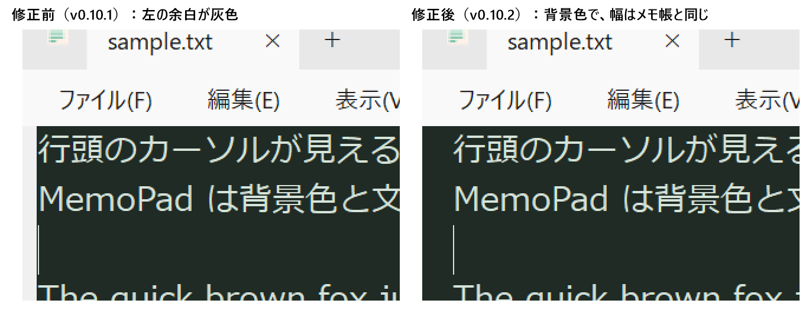
余白は Scintilla の 0 番の欄（マージン）で作っている。欄の種類が「記号（Symbol）」だと行番号用のスタイルの背景色で塗られ、
その色は全スタイルをそろえる StyleClearAll の中で、わざわざシステムの灰色（COLOR_3DFACE）に戻される。
白い背景では #F0F0F0 と白の差がほとんど目立たないので、v0.10.0 から気づかなかった。欄の種類を
「本文の背景色（MarginType.BackColor）」に変えて直した。
18.2 太さ：メモ帳も 1 px
「太さを変えればよいか」という相談について：太さはメモ帳も MemoPad も 1 px で同じだった（Windows の「テキスト カーソルの太さ」が既定の 1 のとき）。
見づらさの主因は 18.1 の帯なので、太さは変えずに、Windows の設定（アクセシビリティ → テキスト カーソル → テキスト カーソルの太さ）に従うようにした。
Scintilla はこの設定を読まないので、v0.10.1 までは設定で太くしても MemoPad だけ 1 px のままだった。起動時に設定を読み、
設定が変わったときの通知（WM_SETTINGCHANGE）でも読み直す。起動中に 1 → 4 → 1 と変えて、キャレットが 1 → 4 → 1 px に追従することを確かめた
（Scintilla.NET 7.0.0 は幅を 3 px までに制限していたが、7.1.1 で Scintilla 本来の 20 px まで使える）。
18.3 余白の幅もメモ帳に合わせた
見える左端から行頭のキャレットまでを測ると、メモ帳は 26 px（論理 17.3 px）、MemoPad は 13 px（論理 8.7 px）と半分しかなかった（150 % 表示）。 RichEdit 時代に決めた 8 px のままだったためで、最大化すると画面の縁から 13 px の位置に 1 px の線が立つことになる。 ユーザーと相談して余白を 8 → 17 px（96 dpi 換算）に広げ、メモ帳と同じ 26 px にした。
| 確認（150 % 表示） | v0.10.1 | v0.10.2 | メモ帳 |
|---|---|---|---|
| 左の余白の色 | #F0F0F0（灰色） | 本文の背景色 | 背景色 |
| 見える左端から行頭のキャレットまで | 13 px | 26 px | 26 px |
| キャレットの太さ（設定が 1 のとき） | 1 px | 1 px | 1 px |
| Windows の「テキスト カーソルの太さ」 | 効かない | 従う（起動中の変更にも追従） | — |
19. FB-24：メニューのアクセス キーが効かない（v0.10.2）
19.1 見つけた経緯と現象
FB-22 の確認で撮影スクリプト（capture-memopad.ps1）を流すと、フォント・色変更などのダイアログが 1 つも開かなかった。
修正前の v0.10.1 でも同じだった。キー入力を再現して調べると、Alt+O で書式メニューは開くが、続けて F を押すと
メニューが閉じて本文に「f」が入る（IME がオンなら未確定の文字になる）。矢印キーと Enter では選べる。
フォーカスが検索バーの入力欄にあるときは正しく開いた。IME は Meltype と Microsoft IME のどちらでも同じだった。
19.2 原因：IME の確定文字はメニューを素通りする
Windows Forms のメニューは、開いている間もフォーカスを本文に残したまま、キー入力のメッセージ（WM_KEYDOWN・WM_CHAR）を
メッセージ ループの段階でメニューへ付け替えて、アクセス キーを受け取っている。本文（Scintilla）に届いたメッセージを記録すると、
F を押したときに届いていたのは WM_KEYDOWN ではなく、IME からの WM_IME_STARTCOMPOSITION →
WM_IME_COMPOSITION（確定文字「f」）→ WM_IME_ENDCOMPOSITION だった。IME の確定文字はフォーカスのあるウィンドウへ直接送られるので、
付け替えを通らない。Windows 標準のメニューはメニューの間 IME を止めるが、Windows Forms のメニューは止めない。
RichEdit 時代（v0.9.x）の撮影スクリプトではダイアログを撮れていたので、本文を Scintilla にした v0.10.0 から起きていたとみられる。
19.3 直し方
メニューが開いている間（メニュー バーは MenuActivate〜MenuDeactivate、右クリック メニューなどは
Opened〜Closed）だけ、フォーカスのある部品から IME を切り離し（ImmAssociateContext に NULL）、
閉じたら元に戻す（MainForm.Menu.cs の SuspendImeForMenu／ResumeImeAfterMenu）。Windows 標準のメニューと同じ振る舞いになる。
19.4 確かめ方
本物のキー入力と同じ経路（keybd_event）でキーを送り、ダイアログが開くか、検索バーにフォーカスが移るかを見た。
| 操作（本文にフォーカスがある状態から） | v0.10.1 | v0.10.2 |
|---|---|---|
| Alt+O → F（フォント） | NG | OK |
| Alt+F → U（ページ設定） | NG | OK |
| Alt+H → A（MemoPad について） | NG | OK |
| Shift+F10（右クリック メニュー）→ F（検索） | NG | OK |
| 上の 4 つを IME オン／IME を閉じた状態の両方で | 8 件とも NG | 8 件とも OK |
| メニューやダイアログを閉じたあと、IME で「あ」と入力できるか | OK | OK |
あわせて、IME がオンだと送った英字が未確定になって「編集すると * が付く」が誤って NG になる test-editing.ps1 を、
入力の前に IME を閉じるように直した。
20. FB-25：それでも最初の起動に「ひと呼吸」ある（見送り）
20.1 残っている 51 MB の内訳
v0.10.2 の発行版を起動し、3 秒後に読み込まれている DLL のうち、アプリのフォルダーにあるものを数えた（43 個・51.0 MB）。 端末を起動した直後は、これをディスクから読み、Defender の初回の検査を受ける（17 節）。
20.2 作りを変えずに削れるのは 4 % ほど
最初の表示までに使っていないのは、Lexilla.dll（構文の色分け用。プレーン テキストでは使わない。1.3 MB）と、Shift_JIS などの文字コード表（ファイルを開くまで要らない。0.8 MB）くらいだった。 合わせて 2.1 MB で全体の約 4 %、時間にすると 30 ms 程度の見込みで、「ひと呼吸」の体感は変わらない。手を入れる危険に見合わないので見送った。 大きく減らすには配り方そのものを変えるしかなく、どれも別の悪影響がある。
| 配り方を変える案 | 悪影響 |
|---|---|
| Native AOT（機械語に事前変換して .NET ランタイムを持たない） | Windows Forms は .NET 9 では対応していない |
| トリミング（使わないコードを DLL から削る） | Windows Forms は対応していない。動いても、実行時にしか分からない欠落が起こりうる |
| .NET ランタイムを同梱せず、Windows にインストールされたものを使う | 利用者に .NET デスクトップ ランタイムを別に入れてもらう必要がある。再起動直後はそれもキャッシュに無いので、効果も限られる |
| 単一ファイル化・複合 ReadyToRun | 試したが初回はむしろ遅くなった（17.4・8 節） |
20.3 残る手：サインイン時に先読みしておく
2 回目以降の起動が速い（ウィンドウ表示まで約 220 ms）のは、1 回目に読んだ DLL がキャッシュに残り、Defender の検査も済んでいるから。 そこで、Windows にサインインしたときに MemoPad を画面に出さずに起動し、DLL を読むだけ読んで終了させておけば、利用者が最初に起動するときも 2 回目と同じ状態になる。 Microsoft Edge の「スタートアップ ブースト」や Office の起動ブーストと同じ考え方で、Edge や Office と違って常駐はしない。
- 見込める効果：再起動後の最初の起動が、2 回目以降と同程度（ウィンドウ表示まで約 0.2 秒）になる。
- 引き換えになるもの：サインインの直後に、裏で約 1 秒・51 MB の読み込みが走る（優先度を下げて行う）。タスク マネージャーの「スタートアップ アプリ」に MemoPad が載る。 メモリが足りなくなってキャッシュから追い出されたあとや、Defender の定義の更新後は、効果が薄れることがある。
入れる場合はインストーラで選べる項目にするつもりで、「入れる（既定はオフ）」「入れる（既定はオン）」「今のまま」の 3 つでユーザーに相談した。 ユーザーの方針は「改善で今の機能やほかの項目に悪影響が出るなら、このままでよい」で、サインインのたびに裏で仕事をさせるのはその悪影響にあたるため、 今のままにした（v0.10.2 の初回起動を、最低限許容できる速さとする）。
21. FB-26：配色パターンの画面が 1920×1080 で切れる（v0.10.3）
21.1 原因：作業領域は「解像度 ÷ 表示スケール − タスク バー」
受け取ったスクリーンショットではタスク バーの高さが 72 px あり、1920×1080 の端末は表示スケール 150 % で使われている。アプリから見た画面は 1280×720（論理 px）で、 タスク バーの 48 px を除くと、ウィンドウを置ける高さ（作業領域）は 672 px しかない。配色パターンの画面は 16 個のカードを 4 列×4 段に並べていて、高さが 752 px あった。画面より 80 px 高いので、上端が画面の上にそろえられ、下の説明文の途中から OK・キャンセルまでがタスク バーの裏に隠れた （同じ 1920×1080 でも 125 % なら作業領域は 816 px あり、収まっていた）。 開発に使っている端末は 2560×1440・150 %（作業領域 912 px）で、収まっていたので気づかなかった。
ほかのダイアログも同じ方法（UI Automation でウィンドウの大きさを読み、1.5 で割る）で測った。作業領域を超えていたのは配色パターンだけだった。
| ダイアログ | 高さ（論理 px） | 作業領域 672 px に |
|---|---|---|
| 配色パターン | 752 → 611 | 収まらない → 収まる |
| フォント | 520 | 収まる |
| 色変更 | 502 | 収まる |
| ページ設定 | 471 | 収まる |
| MemoPad について | 290 | 収まる |
| 行に移動 | 204 | 収まる |
| 保存の確認 | 148 | 収まる |
21.2 直し方：詰めて収め、それでも入らない画面ではスクロール
- 詰める：カードの高さを 84 → 70 px にし、名前・見本文・色コードを上下中央に置いた。カードの間隔、枠の内側の余白、プレビューの最小の高さも詰め、 「OK を押すと…」の説明文はボタンの上から左へ移した。見せる内容は変えていない。これで 752 → 611 px になり、672 px の作業領域に 61 px の余裕ができた。
- それでも入らない画面への備え：開くときに、メイン ウィンドウのあるモニターの作業領域の高さを調べ、画面の上限（
MaxHeight）にする （WpfHost.WorkAreaHeight）。パターンの一覧はスクロールできる領域に入れてあり、上限に当たると一覧だけが縮んでスクロール バーが出る。プレビューと OK・キャンセルは常に見える。 プレビューには高さの上限（160 px）を付け、大きなフォントでも一覧を押しのけないようにした。
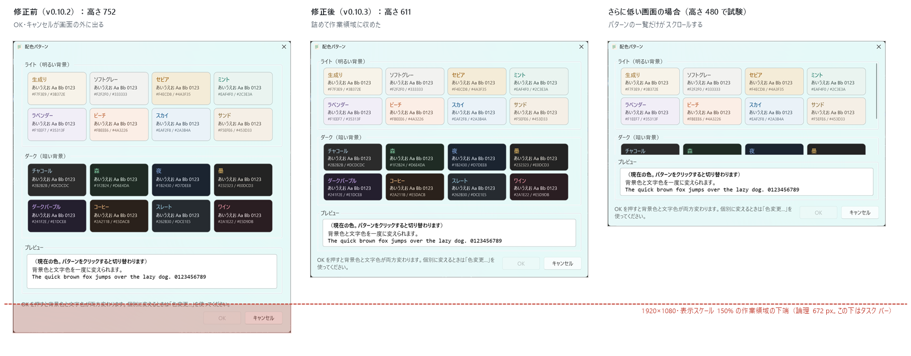
21.3 確かめ方
手元の画面は作業領域が 912 px あるので、高さの上限を一時的に 480 px に下げたビルドで、一覧がスクロールし OK・キャンセルが見えることを確かめた（図 21-1 の右）。 発行版（v0.10.3）では高さ 611 px で、「夜」を選んで OK を押すと背景色・文字色が変わることも撮影スクリプトで確かめた。 1920×1080 の端末での見え方は、ユーザーに確認をお願いしている。
22. FB-27：インストーラのアイコンを v0.5 までのものに戻す（v0.10.3）
v0.5.2 までのインストーラは、Inno Setup 標準のアイコン（箱に下向きの矢印）だった。v0.6.0 でアプリのアイコンを新しくしたときに、
インストーラ定義（installer/memopad.iss）の SetupIconFile でインストーラにも同じアイコンを付けた。
アプリと同じ文書の絵では、ダウンロードしたファイルがインストーラなのかアプリ本体なのか見分けにくい。SetupIconFile の指定を外して標準に戻した。
| 版 | インストーラのアイコン |
|---|---|
| v0.1.0〜v0.5.2 | Inno Setup 標準（箱に下向きの矢印） |
| v0.6.0〜v0.10.2 | アプリと同じ（クリーム色の文書に緑の罫線） |
| v0.10.3 | Inno Setup 標準に戻した（アプリ本体・スタート メニュー・アンインストールの一覧のアイコンは今までどおりアプリのもの） |
作ったインストーラからアイコンを取り出し、v0.5.2 のものと同じ絵になっていることを確かめた。
23. FB-28：ボタンの名前が読み上げられない（v0.10.3）
FB-26 の確認で撮影スクリプトを流すと、「色変更」の画面の「その他の色(M)...」ボタンが見つからなかった。UI Automation でボタンの名前を一覧すると、名前が空だった。
Fluent テーマのボタンは Content="保存しない(_N)" のような文字列の _ をアクセス キーとして扱わないので、
アクセス キーの要るボタンは中身を AccessText にしている。この書き方だと、ボタンの名前（読み上げソフトが読む文字）が空になる。
中身が普通の文字列の「OK」「キャンセル」は名前が付いていた。
| ダイアログ | 名前が空だったボタン |
|---|---|
| 色変更 | その他の色(M)...・その他の色(O)...・既定の色に戻す(D) |
| 保存の確認 | 保存(S)・保存しない(N) |
| ページ設定 | 縦(O)・横(A)（ラジオ ボタン） |
| 行に移動 | 移動(G) |
8 個に AutomationProperties.Name で見たままの名前を付けた。全ダイアログのボタンの名前を一覧し直し、名前の無いものが残っていないことを確かめた
（「行に移動」の入力欄にある消去ボタンだけは Fluent テーマが用意する部品で、記号の名前が付いている）。
見た目と操作は変わらない。読み上げソフトで「ボタン」としか読まれなかったものが、ボタンの名前で読まれるようになる。
24. FB-29：「プログラムから開く」の候補を .txt 以外にも広げる（v0.10.4）
インストーラの「追加タスクの選択」には、v0.1.0 から「「プログラムから開く」の候補に MemoPad を追加する」がある（既定でオン）。 ところが候補に入れていたのは .txt だけで、.log や .py などを MemoPad で開くには、「別のアプリを選択」→「PC でアプリを選択する」で MemoPad.exe を探す必要があった。 一度選べば Windows が覚えるので、この端末でも .md・.gitignore・.html・.php・.py には以前に手で選んだ MemoPad が残っていた。
24.1 仕組み：候補に入れるだけで、既定のアプリは変えない
チェックを入れると、インストーラはレジストリの Software\Classes に 2 種類のキーを書く（ユーザー単位のインストールなら HKCU、全ユーザー向けなら HKLM）。
1 つは MemoPad をアプリとして登録するキーで、表示名と開くときのコマンドを持つ。もう 1 つが拡張子ごとの OpenWithList で、ここに MemoPad.exe があると、その拡張子の右クリックの「プログラムから開く」に MemoPad が並ぶ。
ダブルクリックで開くアプリ（拡張子の既定値と、利用者が「常にこのアプリを使う」で選んだ UserChoice）には触らない。
OpenWithList で決まる。ダブルクリックで開くアプリは変えない24.2 入れた拡張子（83 種類）
太字はユーザーが挙げたもの。ほかは、プログラムを書くときにテキストとして開くことが多いものを足した。.bat や .ps1 のように実行できる形式も、候補に並べるだけでダブルクリックの動作（実行）は変わらない。
| 分類 | 拡張子 |
|---|---|
| テキスト・文書 | .txt（v0.1 から） .log .md .markdown .rst .tex .diff .patch |
| 設定 | .ini .cfg .conf .config .inf .properties .toml .yaml .yml .env .reg .editorconfig .gitignore .gitattributes |
| データ | .csv .tsv .json .jsonc .xml .xsl .xslt .sql .svg |
| Web | .html .htm .xhtml .css .scss .less .js .mjs .cjs .jsx .ts .tsx .vue .php |
| C 系・コンパイル言語 | .c .h .cpp .hpp .cc .cxx .cs .java .kt .go .rs .swift .vb .bas |
| スクリプト | .py .rb .pl .lua .sh .bash .ps1 .psm1 .psd1 .bat .cmd .vbs |
| ビルド・プロジェクト | .sln .csproj .vbproj .vcxproj .props .targets .xaml .manifest .iss .cmake .gradle |
| 拡張子なし | Makefile・Dockerfile・LICENSE・README など（レジストリでは . という名前のキー） |
インストーラ定義（installer/memopad.iss）では、拡張子を #dim OpenWithExts[83] の 1 か所に並べ、Inno Setup の前処理（#sub／#for）で拡張子ごとの行を出している。
増やすときは配列に足して要素数を直すだけでよい。アンインストールでは、MemoPad.exe のキーを消したあと、空になった OpenWithList と拡張子のキーも消す（uninsdeletekeyifempty）。
ほかのアプリが同じキーに書いた内容があれば残る。チェックボックスの名前（txtassoc）は .txt だけだった頃のままにした。変えると、更新のインストールで前回の選択が引き継がれなくなるため。
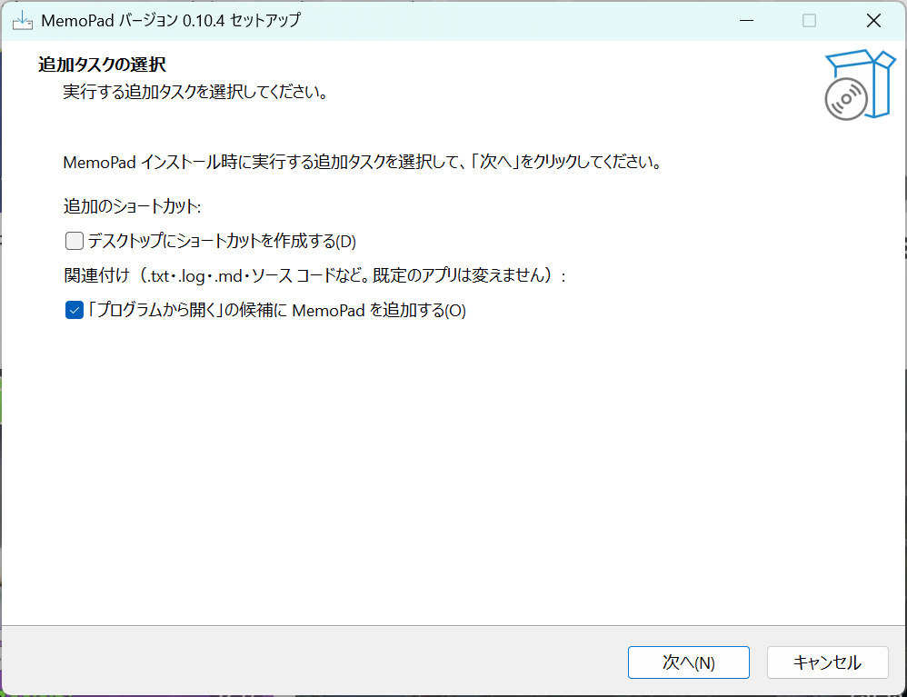
24.3 確かめたこと
「プログラムから開く」の画面をスクリプトから開くと、この端末ではすぐに閉じてしまった。そこで、Explorer が右クリックの一覧を作るのと同じ API（SHAssocEnumHandlers、ファイル単位では
IShellItem の BHID_EnumAssocHandlers）で候補を取り出して確かめた。この端末にユーザー単位で上書きインストール → アンインストール → 入れ直しの順に試した。
| 確かめたこと | 結果 |
|---|---|
| 候補に MemoPad が並ぶ拡張子 | 入れる前 6／83（.txt と、以前に手で選んだ 5 種類）→ 入れた後 83／83 |
| 実際のファイル（Makefile・Dockerfile・LICENSE・.gitignore・.env・sample.log・app.config・main.rs） | すべて候補に MemoPad が並ぶ |
| 種類の名前・既定のアプリ・ダブルクリックで実行されるコマンド | 83 種類とも変化なし |
| アンインストール | MemoPad が作ったキーはすべて消え、空のキーも残らない。もとからあったキー（VS Code の OpenWithProgids など）はそのまま |
| 入れ直し | 1 回目のインストール直後と、レジストリ・関連付けとも一致 |
なお、「常にこのアプリを使う」で MemoPad を既定にしていた拡張子（この端末では .txt と .php）は、アンインストールすると MemoPad.exe が無くなるので既定から外れ、入れ直すと戻った。これは v0.10.3 以前も同じ動きで、今回の変更とは関係ない。
25. FB-30：Ctrl+Z で取り消す単位がおかしい（v0.10.5）
「既存のファイルでは 1 文字ずつ取り消されるのに、新規のファイルでは入力したものが全部消える」との報告。既存のファイルでは日本語を入力していた。 v0.10.4 で、入力のしかたを変えながら「入力 → Ctrl+Z を 1 回ずつ押す → そのたびに本文を取り出す」を自動で繰り返して調べた（本文は UI Automation から読めないので、Ctrl+A → Ctrl+C で取り出した）。
25.1 調べたこと：どの入力でも「全部まとめて 1 回」だった
| 入力（v0.10.4） | 新規のタブ | 既存のファイル |
|---|---|---|
| 英字「abc def ghi」（IME オフ、1 文字 60 ms 間隔） | 1 回で全部消える | 1 回で全部消える |
| 英字「abcd」（IME オフ、1 文字 700 ms 間隔） | — | 1 回で全部消える |
| 日本語「日本語」「です」を 2 回に分けて確定（Meltype） | 1 回で全部消える | 1 回で全部消える |
| 日本語を確定する前に Ctrl+Z | — | 1 回目は確定だけ（Ctrl+Z を IME が受け取る）、2 回目で確定した全体が消える |
新規と既存で違いは出ず、どの入力でも「続けて入力した分が 1 回の Ctrl+Z で全部消える」だった。報告の「1 文字ずつ」は再現できなかった。 1 文字ずつになるのは、Insert キーで上書きモードにしたとき（Scintilla が 1 文字ごとに区切る。上書きモードはタブごとに切り替わる）だけ見つかった。 いずれにしても、メモ帳とは単位が違う。メモ帳で同じように試すと、「単語とその後ろの空白」ごとに取り消され（空白の次に文字を打つと新しい単位になり、「.」では区切らない）、日本語は確定ごとだった。 ユーザーと相談し、取り消す単位をメモ帳と同じにすることにした。単位が決まっていれば、入力のしかたによらず同じ動きになる。
25.2 原因：Scintilla は続けて打った文字を 1 つにまとめる
Scintilla は、編集を 1 回ずつ「元に戻す履歴」に積むとき、直前の操作と同じ種類（挿入なら挿入）で位置が続いていれば、前の操作と 1 つの単位にまとめる。 単語の切れ目でも IME の確定でも区切らないので、カーソルを動かさずに打ち続けた分はすべて 1 つになっていた。区切られるのは、カーソルを動かして別の場所に打ったとき、削除をはさんだとき、貼り付けなどの別の操作をしたときだけ。
25.3 対策：文字が入る前に、メモ帳の切れ目で区切る
Scintilla には「ここから先は前の操作とまとめない」と直接指示する API は無いが、空の BeginUndoAction／EndUndoAction を 1 組呼ぶと、直前の操作に「まとめない」印が付く。
PlainTextEdit の WndProc で、文字が本文に入る前のメッセージ（WM_CHAR、Enter・Tab の WM_KEYDOWN、IME の確定 WM_IME_COMPOSITION）を受け、次のときにこの印を付ける。
- 空白以外の文字を打つとき、カーソルの直前が空白・タブ・改行なら（単語の始まり）
- 日本語などを含む IME の確定の前と、その次の入力の前（確定ごとに 1 つの単位）。確定した文字列は
ImmGetCompositionStringで読むだけで、Scintilla の処理には触らない - 半角英数だけの確定は、キーで打った文字と同じ扱いにする（1 文字ずつ確定を送る IME でも、単語ごとにまとまるように）
選択範囲を置き換える入力と上書きモードは、Scintilla が自分で区切るので何もしない。貼り付け・切り取り・削除の単位も今までどおり。
25.4 確かめたこと
| 入力（v0.10.5） | Ctrl+Z を 1 回ずつ押したときに消える順 |
|---|---|
| 英字「abc def␣␣ghi.jkl」（新規・既存とも） | 「ghi.jkl」→「def␣␣」→「abc␣」 |
| 英字「abc」Enter「def」Enter Enter「ghi」 | 「ghi」→「def」と改行 2 つ →「abc」と改行 |
| 日本語「日本語」「です」を 2 回に分けて確定（Meltype） | 「です」→「日本語」 |
新規のタブと既存のファイルで同じ動きになった。既存の編集テスト（docs\tools\test-editing.ps1。多段階の元に戻す・やり直し、未保存の印、改行コードと日本語の保存）も 10 件すべて OK。
26. FB-31・32：右クリックの「MemoPad で開く」と .bat（v0.10.5）
FB-31 は「.bat も『プログラムから開く』に」、FB-32 は「右クリックの最初のメニューに『MemoPad で開く』を」という要望。ユーザーのスクリーンショットでは、.bat の右クリックの最初の階層に「Code で開く」「メモ帳で編集」が並び、「プログラムから開く」は無かった。
26.1 .bat には「プログラムから開く」自体が出ない
.bat は v0.10.4 で候補（.bat\OpenWithList\MemoPad.exe）に入れていて、SHAssocEnumHandlers でも MemoPad が候補に並んでいた。ところが、Windows は .bat の右クリックに「プログラムから開く」の項目そのものを出さない。
候補に入れても選ぶ場所が無いので、FB-31 は FB-32 の「MemoPad で開く」でまとめて対応することにした。
26.2 Windows 11 の右クリック メニューは 2 階層
Windows 11 の右クリック メニューの最初の階層に、ほかのアプリが項目を足せるのは、パッケージ（ID を持つアプリ）が登録した項目だけ。項目の中身は IExplorerCommand を実装した DLL で、パッケージのマニフェストの windows.fileExplorerContextMenus で登録する。
メモ帳は Microsoft Store のアプリなので、もともとパッケージを持っている。VS Code はインストール先に「外部の場所を使うパッケージ」（スパース パッケージ）を置き、その中で「Code で開く」を登録している（この端末の VS Code のマニフェストで確かめた。署名は Microsoft）。
これまでのようにレジストリの shell の下に書く項目は、「その他のオプションを確認」（Shift+F10）で開く従来のメニューの中にしか出ない。この端末に入っている、ほかのエディタの「〜で開く」も従来の方式で、最初の階層には出ていなかった。
26.3 最初の階層に出すための署名をどうするか
パッケージは、Windows が信頼する証明書で署名していないと登録できない。コストをかけずに済ませる方法を比べた。
| 方法 | 出る場所 | 費用・手間 | 判断 |
|---|---|---|---|
A. レジストリの *\shell に書く（従来の方式） | 「その他のオプションを確認」の中（Windows 10 は最初の階層） | 無料・すぐできる | v0.10.5 で採用 |
| B. SignPath Foundation の無料コード署名（オープンソース向け） | 最初の階層 | 無料。審査があり、期間は読めず、通るとも限らない。ビルドを GitHub Actions に移す必要がある。発行元は「SignPath Foundation」と表示される。インストーラにも署名できるので SmartScreen の警告も出にくくなる | 並行して申請する |
| C. 自作の証明書を、インストール時に PC の「信頼する発行元」へ入れる | 最初の階層 | 無料。ただしインストールに管理者権限が要り、利用者の PC に信頼する証明書を増やすことになる | 一般向けの配布には使わない |
| D. 有料の署名サービス・証明書 | 最初の階層 | 月額または年額の費用 | コスト 0 の方針で除外 |
ユーザーと相談し、v0.10.5 では A で「その他のオプションを確認」の中に出しておき、並行して B を申請することにした。審査が通ったら、IExplorerCommand の DLL とスパース パッケージを作って最初の階層に出す。
26.4 実装：すべてのファイルに「MemoPad で開く」
インストーラの「追加タスクの選択」に「右クリック メニューに「MemoPad で開く」を追加する」を足した（既定でオン。タスク名 contextmenu）。チェックすると、Software\Classes\*\shell\MemoPad に表示名・アイコン・開くときのコマンドを書く。
* はすべてのファイルを表すので、VS Code の「Code で開く」と同じく、どのファイルの右クリックにも出る。既定のアプリやダブルクリックの動作（.bat なら実行）は変えない。
| キー | 値 |
|---|---|
*\shell\MemoPad | （既定）＝ MemoPad で開く、Icon ＝ "…\MemoPad.exe",0 |
*\shell\MemoPad\command | （既定）＝ "…\MemoPad.exe" "%1" |
ユーザー単位のインストールでは、HKCU の Software\Classes\* と *\shell をここで初めて作ることがある。アンインストールでは、MemoPad のキーを消したあと、空になったこの 2 つも消す（ほかのアプリのキーがあれば残す）。
26.5 確かめたこと
| 確かめたこと | 結果 |
|---|---|
従来のメニューの項目（Shell.Application の Verbs()。.txt・.bat・.cmd・.py・.reg・.ini） | 6 種類すべてに「MemoPad で開く」が出る |
| .bat を「MemoPad で開く」で開く | MemoPad に「t.bat - MemoPad」として開き、バッチは実行されない |
| v0.10.4 からの上書きインストール（タスクの指定なし） | 新しいタスクは既定どおりオンになり、キーが作られる |
| アンインストール | *\shell\MemoPad と、空になった *\shell が消える。* はほかのアプリのキー（OpenWithProgids・shellex）があるので残る |
| 入れ直し | キーが元どおりに作られる |
26.6 SignPath Foundation への申請準備
SignPath Foundation は、オープンソースのプロジェクトに無料でコード署名の証明書を提供している。条件（signpath.org/terms）のうち、MemoPad で手当てが要ったものと、用意したものは次のとおり。
| 条件 | MemoPad の状態・用意したもの |
|---|---|
| OSI 承認のライセンス、公開リポジトリ、マルウェアでないこと | MIT ライセンス、GitHub の公開リポジトリ。通信する機能は無い |
| すでにリリースしていて、機能をダウンロード ページに書いていること | GitHub Releases でインストーラを配布し、紹介ページと README に機能を書いている |
| ソースから自動化された手順でビルドすること（GitHub がホストするランナー） | GitHub Actions のワークフロー .github/workflows/build.yml を作った。発行 → 本体に署名 → インストーラを作成 → インストーラに署名、の順。署名の手順は、リポジトリに SignPath の設定（変数とシークレット）を入れるまで飛ばす |
| 署名するファイルの製品名・製品バージョンをそろえること | exe と dll の製品バージョンに付いていたコミット番号（0.10.5+c80201d…）を外し、インストーラにも版情報を入れた。3 つとも製品名 MemoPad・製品バージョンは版番号だけになる |
| 自分たちのファイルだけに署名すること | 署名するのはインストーラと MemoPad.exe・MemoPad.dll だけ。.NET ランタイムと Scintilla には署名しない。SignPath に登録する設定の控えを .signpath/ に置いた |
| トップ・ダウンロード ページに「Code signing policy」を載せること（帰属の文、役割、プライバシー） | Code signing policy のページを作り、紹介ページ・README・リリースの説明からリンクした |
| 担当者全員が 2 段階認証を使うこと | GitHub の 2 段階認証はユーザーが確かめる（API からは見えなかった） |
| インストーラにはアンインストールの手段があり、システムの変更は事前に示すこと | Inno Setup のアンインストーラ。関連付けと右クリック メニューは「追加タスクの選択」で内容を示し、外せる |
申請はユーザーのアカウントで行う。審査が通ったら、SignPath 側でプロジェクトと署名ポリシーを作り、GitHub の連携と、リポジトリの変数・シークレットを設定すると、ワークフローの署名の手順が動き出す。 なお、Inno Setup はインストーラの版情報の文字列を固定長で書き込むので、製品名が「MemoPad」の後ろに空白の詰まった 60 文字になる。SignPath の製品名の照合で空白が問題にならないかは、設定のときに実物で確かめる。
27. つまずいた点のメモ
- 体感の遅さは、まず数値にする。アプリ内部のログだけ見ると「速い」と結論しかねなかった。画面のピクセルが変わるまでを別プロセスから測って初めて、メモ帳との差（19 ms 対 50 ms）が見えた。
- PowerShell 5.1 は
$nullを文字列引数に渡すと空文字になる。FindWindow($null, "title")がクラス名 "" で検索して失敗した。[NullString]::Valueを渡す。 - PowerShell の
-WindowStyle Hiddenは子の Windows Forms フォームまで隠す。計測用のホスト ウィンドウが出ず、しばらく原因が分からなかった。 - スクリプト ファイルは BOM 付き UTF-8 で保存する。BOM 無しだと PowerShell 5.1 が ANSI として読み、日本語のコメントで構文が壊れる。
- ビルドが 1 回おきに失敗する原因はビルド サーバーだった。前回の MSBuild ノードや VBCSCompiler が
objの生成ファイルを掴んだままになる。dotnet build-server shutdownしてから-nodeReuse:false -p:UseSharedCompilation=falseでビルドすると安定した。 - Fluent の MenuItem は高さを縛ると消える。Menu に
Height=30を付けただけで項目が描画されなくなった。テンプレートを差し替えるのが確実。 - 撮影スクリプトはプログラムからの操作が多く、マウス操作の不具合を見逃す。タブの切り替えは UI Automation の Invoke や SelectedItem の設定では動いてしまう。ユーザーが実際に行う操作（マウス クリック）そのものを再現する確認を、機能ごとに 1 つは持つ。
- 表示スケールを決め打ちしない。この端末は 150 % で、125 % と思い込んで換算した値が合わなかった。
GetDpiForSystemで確かめてから換算する。 - 起動時間は「どこか 1 か所」ではなく積み上げで決まる。段階ごとの経過時間を記録して初めて、WPF の固定費が全体の 8 割を占めると分かった。最小構成のアプリで下限を測るのが早道だった。
- 複合 ReadyToRun は初回起動を測ってから採用を決める。温まった状態の数字だけ見ると速いが、新規コピー（インストール直後相当）の初回起動は 3 秒以上悪化した。
- dotnet-trace は対象を強制終了するとトレースが途中で切れる。JIT イベントの集計はできたが、CPU サンプリングはスタックが解決できず使えなかった。対象が自分で終了する形にする。
- 速くするより先に、どこまで速くできるかの下限を測る。最小構成の WPF（約 400 ms）と Windows Forms（約 160 ms）を作って比べたことで、「WPF のままでは無理」と早く結論でき、作り直しの判断材料になった。
- 自前のタイトル バーは、子コントロールが当たり判定を横取りする。親フォームが
WM_NCHITTESTで HTCAPTION と答えても、その座標に子ウィンドウがあると Windows は子に尋ねる。1 枚の HWND で描く WPF から、コントロールごとに HWND を持つ Windows Forms に移ると必ず踏む。子からHTTRANSPARENTを返して親へ譲る。 - ウィンドウの移動・リサイズは実際のマウス操作で確かめる。
WindowFromPointは HTTRANSPARENT を無視して子ウィンドウを返すので、これだけでは直ったか分からない。mouse_eventでドラッグして、ウィンドウの位置とサイズの変化を見るのが確実。 - ToolStripMenuItem の
Paddingは左右が効かない。メニュー項目の字下げを変えようと 4 → 13 → 40 px と変えても文字の位置は 1 px も動かなかった（効くのは上下＝項目の高さだけ）。左右はポップアップ側のアイコン欄（ShowImageMargin）と内部レイアウトが決めている。値を変えて撮影・実測する確認を挟まないと、効かない設定をそれらしいコメント付きで残してしまう。 - RichEdit はドロップを自分でも処理する。Windows Forms の
DragDropイベントでファイルを開いても、そのあとに RichEdit 側の処理が走って変更通知が上がる。貼り付けられる中身が無くても通知だけは来るので、開いたばかりの文書が「編集済み」になった。ドロップ先（IDropTarget）ごと自前のものに差し替えるのが確実。 - ドラッグ＆ドロップの不具合は本物のドラッグでないと再現しない。自前のウィンドウから
DoDragDropで送ったドロップは RichEdit に拒否されて素通りした。エクスプローラーが渡すデータ オブジェクトには複数の形式が入っていて、挙動がまったく違う。エクスプローラーの項目の位置を UI Automation で取り、実際のマウス操作でドラッグするのが確実。 - 「メモ帳の RichEdit」と「Windows の RichEdit」は別物。メモ帳はアプリに同梱した Office 系の
riched20.dll（16.0）を使っていて、MemoPad が使う Windows 標準のmsftedit.dllとは版が違う。メモ帳で起きないからといって同じ部品で起きないとは限らない。プロセスが読み込んでいるモジュールの一覧で確かめる。 - ポインターを渡すメッセージは別プロセスから送れない。
EM_SETSCROLLPOSを PowerShell から送ると、ポインターが相手のプロセスでは無効で、MemoPad 側で値が壊れた（計測側の誤り）。Windows が中身を運んでくれるのは一部の標準メッセージだけ。小さな検証用アプリの中で試すのが確実。 - 計測がアプリを遅くすることがある。読み込みの完了を知ろうと 1 ms ごとに
WM_GETTEXTLENGTHを送ったら、UI スレッドが応答に追われ、読み込みが数十秒かかるように見えた。読み込み中はメッセージを送らず、画面の変化とWM_NULLの往復時間で見る。GetPixelを点ごとに呼ぶのも DWM 越しでは非常に遅いので、範囲をまとめて写し取って比べる。 - PowerShell の関数名は既存のエイリアスに負ける。
SI（Set-Item）やSc（Set-Content）という名前の関数を作っても、呼ぶとエイリアスのほうが動く。検証スクリプトの関数名は長めに付ける。 - Windows Forms の
RichTextBox.WordWrapはスクロールバーのスタイルまで決める。true のままだと横スクロールバーも横送りも付かない。折り返しを RichEdit へ直接指示して切り替える作りでは、見落としやすい。 - 自前描画はアクセシビリティを落とす。1 枚のコントロールに描いたタブは、見た目は同じでも支援技術からは何も見えない。実体のあるコントロール（
Button継承）にすると標準の仕組みに乗る。 - アセンブリ属性 1 つで 23 MB 読み込まれる。WPF テンプレートの
ThemeInfoや、パッケージの Content に WPF のビルドが付ける属性は、どこからも使っていなくても、Windows Forms が exe の属性を調べるだけで WPF 本体を引き込む。「使っていない DLL がなぜ読まれるか」はAppDomain.AssemblyLoadで呼び出し元のスタックを残すと一発で分かる。 - 初回起動の問題は、温まった状態の計測では見えない。
robocopy /J（バッファーを使わないコピー）で新しい場所へ写すと、管理者権限も再起動も無しに「キャッシュに無い状態」を作れる。普通のコピー＋全ファイル読み込みと組み合わせると、ディスクと Defender の取り分も分けられる。 - 配色の不具合は、利用者の配色で確かめる。左の余白の灰色は白い背景では見えず、v0.10.0 から誰も気づかなかった。撮影スクリプトは設定を退避して既定の配色で撮るので、濃い配色での見え方は別に確かめる。
- IME の確定文字はメッセージ ループの付け替えを通らない。Windows Forms のメニューは本文にフォーカスを残したままキー入力を横取りする作りなので、IME が有効な部品にフォーカスがあるとアクセス キーが効かない。日本語環境では「IME がオンのまま」が普通の状態なので、キー操作の確認は IME オンでも行う。
- 保存しない
SystemParametersInfoの変更ではWM_SETTINGCHANGEが配られない。テキスト カーソルの太さを一時的に変えて追従を確かめようとして、通知が届かず悩んだ。利用者の設定を書き換えずに試すには、値だけ変えて通知は対象に直接送る。 - 画面の大きさは「解像度 ÷ 表示スケール − タスク バー」で考える。1920×1080 でも 150 % なら、ウィンドウを置ける高さは論理 672 px しかない。開発機の画面に収まっていても安心できない。ダイアログは作業領域の高さを上限にし、はみ出す分は一覧などの一部だけをスクロールさせて、ボタンは常に見えるようにする。
- WPF の
AccessTextを中身にしたボタンは、名前が空になる。見た目では分からず、読み上げソフトや UI Automation でしか気づけない。アクセス キーのためにAccessTextを使うときはAutomationProperties.Nameも付ける。撮影スクリプトが要素を名前で探していたおかげで見つかった。 - 拡張子のないファイルは「
.」という名前のキーで扱われる。Software\Classes\.\OpenWithListに入れると、Makefile や LICENSE の「プログラムから開く」にも出る。レジストリの API は「.」を特別扱いしないので、普通のキーとして作れる。 - 「プログラムから開く」の候補は、画面を開かずに API で確かめられる。
SHAssocEnumHandlers（拡張子単位）やBHID_EnumAssocHandlers（ファイル単位）は、Explorer の右クリックと同じ一覧を返す。OpenAs_RunDLLで画面を出す方法は、スクリプトから起動するとすぐ閉じて使えなかった。 - ただし「候補に並ぶ」と「メニューに出る」は別。.bat は API では MemoPad が候補に並んでいたが、Windows が右クリックに「プログラムから開く」自体を出さなかった（FB-31）。最後は実際の右クリックで確かめる。
- Scintilla の「元に戻す」は、続けて打った文字を 1 つにまとめる。区切る専用の API は無いが、空の
BeginUndoAction／EndUndoActionを 1 組呼ぶと、直前の操作に「まとめない」印が付く。文字が入る前（WM_CHARや IME の確定を受けた時点）に呼ぶ。 - IME で変換中に押した Ctrl+Z は、本文ではなく IME に届く。Meltype では 1 回目で確定だけが起きた。元に戻す動きを確かめるときは、確定してから押す場合と分けて試す。
- Windows 11 の右クリックの最初の階層は、パッケージの項目だけ。レジストリの
shellに書いた項目は「その他のオプションを確認」の中に入る。VS Code も最初の階層に出すために、署名付きのスパース パッケージを別に登録している。 - .NET の製品バージョンには、既定でコミット番号が付く。.NET 8 以降の SDK は、Git のリポジトリでビルドすると
InformationalVersionに+<コミット番号>を足す。ファイルのプロパティの「製品バージョン」が0.10.5+c80201d…になり、署名の条件「製品バージョンをそろえる」に合わなかった。IncludeSourceRevisionInInformationalVersionを false にして外す。 - PowerShell はレジストリのパスの
*もワイルドカードとして扱う。Test-Path 'HKCU:\Software\Classes\*\shell'は、すべての種類のshellキーに一致してしまう。*というキーそのものを調べるときは-LiteralPathを使う。